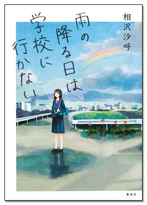
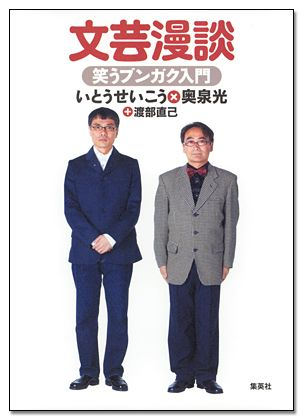
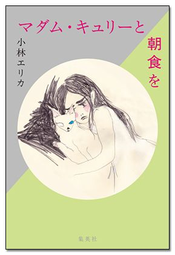
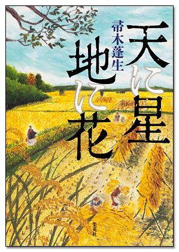
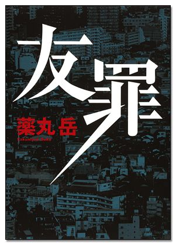
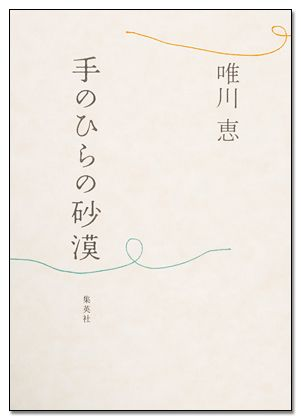

| 集英社電子書籍ガイド２０１４‐２０１５ 文芸単行本編 (集英社文芸単行本) | |
| 集英社デジタル出版室 | |
| (2015) | |
集英社電子書籍ガイド２０１４－２０１５ 文芸単行本編
集英社デジタル出版室・編
この本は縦書きでレイアウトされています。
また、ご覧になる機種により、表示の差が認められることがあります。
はじめに
本書をダウンロードしていただきありがとうございます。
集英社は２０００年９月より電子書籍を配信してきました。配信を始めた当初より作品数も増え、２０１４年11 月現在、約２６００作品を配信中です。
配信点数が増えていくにつれて、最近では「どの作品が電子書籍で読めるの？」という声も聞こえるようになりました。
そういったご要望にお応えして、小社配信の文芸単行本電子版をご紹介いたします。
また、既成の文学観にとらわれない気鋭の新人を輩出してきた「すばる文学賞」、小説の世界に常に新しい風を送り込む「小説すばる新人賞」の電子化作品も合わせてご紹介いたします。
本書をお手持ちの端末にダウンロードして、デジタル読書ライフの一助にしていただければ幸いです。
２０１４年12 月吉日
集英社 デジタル出版室
＊著者プロフィールは単行本発行時のものを掲載しています。
＊各電子書籍の価格は、電子書店でご確認ください。
＊目次は著者五十音順です。
【目次】
◆ 相沢沙呼 雨の降る日は学校に行かない
◆ 朝井リョウ 少女は卒業しない
世界地図の下書き【電子特別版】
◆ 浅田次郎 天切り松闇がたり 第五巻 ライムライト
◆ 天野純希 信長 暁の魔王
◆ 伊坂幸太郎 残り全部バケーション
◆ 石田衣良 北斗 ある殺人者の回心
◆ いとうせいこう 鼻に挟み撃ち 他三編
◆ 岩井三四二 むつかしきこと承り候 公事指南控帳
◆ 宇江佐真理 糸車
◆ 冲方 丁 もらい泣き
◆ 荻原 浩 花のさくら通り
◆ 奥泉 光 東京自叙伝
文芸漫談 笑うブンガク入門
世界文学は面白い。文芸漫談で地球一周
虫樹音楽集
◆ 奥田亜希子 左目に映る星
◆ 梶 よう子 桃のひこばえ 御薬園同心水上草介
お伊勢ものがたり 親子三代道中記
◆ 金城孝祐 教授と少女と錬金術師
◆ 壁井ユカコ ２．４３ 清陰高校男子バレー部【カラーイラスト付特別版】
◆ 神永 学 イノセントブルー 記憶の旅人
◆ 神田 茜 ぼくの守る星
◆ 木内 昇 挽道守
◆ 京極夏彦 虚言少年
書楼弔堂 破暁【合冊版】
書楼弔堂 破暁 探書壱 臨終
書楼弔堂 破暁 探書弐 発心
書楼弔堂 破暁 探書参 方便
書楼弔堂 破暁 探書肆 贖罪
書楼弔堂 破暁 探書伍 闕如
書楼弔堂 破暁 探書陸 未完
◆ 久坂部 羊 嗤う名医
◆ 木理宇 赤と白
◆ 久住昌之 野武士、西へ 二年間の散歩
◆ 小林エリカ マダム・キュリーと朝食を
◆ 今野 敏 【シリーズ】クローズアップ
チャンミーグヮー
◆ 酒井順子 泡沫日記
◆ 佐川光晴 おれたちの約束（おれのおばさんシリーズ）
おれたちの故郷（おれのおばさんシリーズ）
◆ 桜木紫乃 ホテルローヤル
◆ 小路幸也 フロム・ミー・トゥ・ユー 東京バンドワゴン
◆ 白石一文 彼が通る不思議なコースを私も
◆ 新庄 耕 狭小邸宅
◆ 杉井 光 神曲プロデューサー
◆ 瀬尾まいこ 春、戻る
◆ 樹のぶ子 香夜
◆ 高橋源一郎 銀河鉄道の彼方に
◆ 高橋三千綱 猫はときどき旅に出る
◆ 橋陽子 黄金の庭
◆ 高野秀行 【カラー版】未来国家ブータン
◆ 村深月 オーダーメイド殺人クラブ
◆ 堂場瞬一 解
グレイ
警察回りの夏
◆ 長沢 樹 上石神井さよならレボリューション
◆ 中島京子 かたづの！
◆ 中野京子 はじめてのルーヴル
◆ 中山七里 アポロンの嘲笑
◆ 波野好江 中村勘三郎 最期の１３１日 哲明さんと生きて
◆ 橋本 治 結婚
◆ 橋本長道 サラは銀の涙を探しに
◆ 馳 星周 ソウルメイト【電子特別版】
◆ 帚木 生 天に星 地に花
◆ 葉室 麟 緋の天空
◆ 原田ひ香 はじまらないティータイム
ミチルさん、今日も上機嫌
◆ 原田マハ 旅屋おかえり
ジヴェルニーの食卓［電子特別版］
◆ 林 真理子 フェイバリット・ワン
◆ 坂東眞砂子 眠る魚
◆ 半村 良 人生ごめんなさい
続・八十八夜物語
億単位の男
◆ 東山彰良 ラブコメの法則
◆ 藤野可織 パトロネ
◆ 本多孝好 ストレイヤーズ・クロニクル ＡＣＴ－１
ストレイヤーズ・クロニクル ＡＣＴ－２
ストレイヤーズ・クロニクル ＡＣＴ－３
◆ 誉田哲也 あなたが愛した記憶
◆ 前田司郎 ジ、エクストリーム、スキヤキ
◆ 松井今朝子 壺中の回廊
◆ 麻耶雄嵩 貴族探偵対女探偵
◆ 三浦しをん 政と源
◆ 道尾秀介 鏡の花
◆ 村山由佳 【電子特別版】天使の柩（天使の卵シリーズ）
◆ 薬丸 岳 友罪【電子特別版】
◆ 矢野 隆 鉄拳 the dark history of mishima
◆ 山本一力 戌亥の追風
◆ 山本兼一 修羅走る 関ヶ原
◆ 唯川 恵 手のひらの砂漠
◆ 行成 薫 名も無き世界のエンドロール
◆ よしもとばなな 鳥たち
集英社電子書籍ガイド２０１４－２０１５ 文芸単行本編
◆ 相沢沙呼 （あいざわ・さこ）
１９８３年、埼玉県生まれ。２００９年『午前零時のサンドリヨン』で第19 回鮎川哲也賞を受賞しデビュー。
11 年３月「原始人ランナウェイ」が第64 回日本推理作家協会賞（短編部門）候補作に。
その他の著作に『ロートケプション、こっちにおいで』『マツリカ・マジョルカ』『ココロ・ファインダ』『マツリカ・マハリタ』『卯月の雪のレター・レター』
『雨の降る日は学校に行かない』

中学になじめず、保健室登校をしているサエとナツ。そこは二人の楽園だった。
中学生女子の生きづらさと、かすかな希望を丁寧に描き出す連作短編集。
昼下がりの保健室。そこは教室に居場所のないサエとナツのささやかな楽園だった。けれどサエが突然〝自分のクラスに戻る〟と言い出して――（『ねぇ、卵の殻が付いている』より）。〝お父さん、お母さん、先立つ不孝をお許しください〟。早朝の教室で毎日手帳に書いていた架空の遺書。その手帳を偶然にも人気者の同級生が拾ってしまう――（『死にたいノート』より）。揺れ動く６人の中学生の心を綴る６つのストーリー。
◆ 朝井リョウ （あさい・りょう）
１９８９年５月生まれ、岐阜県出身。２００９年「桐島、部活やめるってよ」で第22 回小説すばる新人賞（集英社）を受賞しデビュー。
12 年に同作が映画化され、注目を集める。
また、同年『もういちど生まれる』で第１４７回直木賞候補に。
13 年『何者』で第１４８回直木賞を受賞。
他の著書に『チア男子!! 』『星やどりの声』『少女は卒業しない』など。
『少女は卒業しない』

高校最後の卒業式、７つのさよならの物語。
「桐島、部活やめるってよ」で鮮烈なデビューを飾った、朝井リョウが描く、笑いと涙あふれる傑作青春小説！
ロールが始まる：卒業式の朝、私は図書室の先生に最後の「返却」をしなくちゃいけない...。●屋上は青：優等生の自分が嫌だった――高校生活最後の日、私は幼馴染の彼と初めて学校をさぼる。●在校生代表：生徒会の２年生女子による送辞は、衝撃の「告白」だった!? ●寺田の足の甲はキャベツ：女バスの部長と男バスのお調子者。部内公認のカップルは、じゃれあいながらも抱えている不安があって...。●四拍子をもう一度：全校生徒が楽しみにしている卒業ライブ。トリを飾る人気ビジュアル系バンドの衣装が消える事件が発生!? ●ふたりの背景：告白スポットとなっている、東棟の外壁に描かれた壁画。向き合う男女の絵に隠された、ある男子の想いとは。●夜明けの中心：卒業式の夜、誰もいない校舎。幽霊が出ると噂の東棟で、私はどうしてもやりたいことがあった――。
『世界地図の下書き【電子特別版】』
「青葉おひさまの家」で暮らす子どもたち。夏祭り、運動会、クリスマス。そして迎える、大切な人との別れ。さよならの日に向けて、４人の小学生が計画した「作戦」とは......？
【電子版限定特典つき】突然の交通事故で両親をなくし、児童養護施設「青葉おひさまの家」で暮らすことになった小学生の太輔。悲しみでしばらく心を閉ざしていたが、同じ部屋の仲間たちのおかげですこしずつ打ち解けていく。とくにお母さんのように優しい高校生の佐緒里は、みんなにとって特別な存在。施設を卒業する佐緒里のため、４人の子供たちは、ランタンに願い事を託して空に飛ばす「蛍祭り」を復活させようと、作戦を立てはじめる――。直木賞受賞後第一作！ 電子版限定！ スタジオジブリのアニメーター・近藤勝也氏が本書のために描き下ろしたカラーイラスト３点＆「青春と読書」 年７月号に掲載された、著者インタビューも収録。
◆ 浅田次郎 （あさだ・じろう）
１９５１年東京都生まれ。95 年『地下鉄に乗って』で吉川英治文学新人賞、97 年『鉄道員』で直木賞、２０００年『壬生義士伝』で柴田錬三郎賞、06 年『お腹召しませ』で中央公論文芸賞、司馬 太郎賞、08 年『中原の虹』で吉川英治文学賞、10 年『終わらざる夏』で毎日出版文化賞を受賞。
その他、『プリズンホテル』『王妃の館』など著書多数。
11 年より日本ペンクラブ会長。
『天切り松闇がたり 第五巻 ライムライト』
大人気シリーズ、９年ぶりの刊行！
ご存知、目細の安吉一家が昭和初期の東京で大活躍。チャップリン来日を巡る陰謀とは...？
時は昭和七年。チャールズ・チャップリンの来日を控え、華やぐ東京の街。その裏で、血気に逸る軍人たちの陰謀がひそかに進行していた。五・一五事件の前日に来日した大スター、チャップリンの知られざる暗殺計画とは――。粋と仁義を体現する伝説の夜盗たちが、昭和の帝都を駆け抜ける。目細の安吉一家が挑んだ、一世一代の大勝負とは？ 人気シリーズ、最新刊。表題作「ライムライト」ほか５編を収録。
【好評既刊】
天切り松 闇がたり 第一巻 闇の花道 （集英社ｅ文庫）

帝都の闇を駆ける伝説の怪盗たちの物語！
時は大正ロマン華やかなりし頃、帝都に名を馳せた義賊「目細の安吉」一家。盗られて困らぬ天下のお宝だけを狙い、貧しい人々には救いの手をさしのべる。粋でいなせな怪盗たちの胸のすく大活躍を描く傑作悪漢小説（ピカレスク・ロマン）シリーズ第一弾。
天切り松 闇がたり 第二巻 残俠 （集英社ｅ文庫）
男てえのは、理屈じゃねえ――。
「母を死に追いやり、姉を女衒に売った父の供養なんてできない」少年・天切り松は声を絞る...「春のかたみに」等、裏稼業の世界に生きる人間たちが、意地と見栄に命をかける大正ピカレスクロマン。
天切り松 闇がたり 第三巻 初湯千両 （集英社ｅ文庫）
ご存知、目細の安吉一家。大正の帝都に見参。
大正の帝都の闇を駆け抜けるピカレスク・ロマン。シベリア出兵で戦死した兵士の遺族を助ける説教寅の心意気（「初湯千両」）など、時代の大きなうねりに翻弄される庶民に味方する目細の安吉一家の大活躍を描く。
天切り松 闇がたり 第四巻 昭和俠盗伝 （集英社ｅ文庫）
昭和の帝都で怪盗たちが「国」と「戦争」に挑む！
ご存知目細の安吉一家が昭和東京を駆け抜ける――。今宵、天切り松が語りまするは、昭和初期の帝都東京、近づく戦争のきな臭さの中でモボ・モガが闊歩する時代。巨悪に挑む青年期の松蔵と一家の活躍を描く傑作シリーズ第四巻。
◆ 天野純希 （あまの・すみき）
１９７９年名古屋市生まれ。愛知大学文学部卒業。２００７年『桃山ビート・トライブ』で第20 回小説すばる新人賞を受賞。
元寇に翻弄される若者たちの青春を描く『青嵐の譜』、長宗我部元親の興隆と滅亡までを描く『南海の翼 長宗我部元親正伝』、織田信長と一向宗に挑む少女の物語『風吹く谷の守人』など、話題作を次々と発表。
他の著作に『戊辰繚乱』『破天の剣』『サムライ・ダイアリー 鸚鵡籠中記異聞』がある。次代を担う実力派歴史小説家の一人。
『信長 暁の魔王』
信長は、なぜあのような人格になったのか。
実母との関係に注目し、新しい信長像を作り上げた力作長編。
「その赤子を今すぐ殺せ」実母の久子が放った言葉。信長は、我が身が生まれ落ちた刹那の記憶を持っていた。親にも懐かない子供らしいところのない少年として育った吉法師―信長。弟・信行を溺愛する久子。父・信秀亡き後、織田家を巡る母・兄・弟の争いは静かに深まっていく―なぜ信長は非情になったのか。母との知られざる関係に着目した傑作。
◆ 伊坂幸太郎 （いさか・こうたろう）
１９７１年千葉県生まれ。東北大学法学部卒業。
『オーデュポンの祈り』（新潮ミステリー俱楽部賞）、『アヒルと鴨のコインロッカー』（吉川英治文学新人賞、『死神の精度』（日本推理作家協会賞短編部門）、『ゴールデンスランバー』（山本周五郎賞／本屋大賞）など著書多数。
『残り全部バケーション』
人生、まだ、続いていくから。
裏稼業コンビ「溝口」と「岡田」をめぐる全５章。
離婚する夫婦とその一人娘が、ひょんなことから「岡田」と名乗る若い男性とドライブに行くことに。男の素性がつかめないまま、起こった出来事とは（「残り全部バケーション」）、路上で見かけた小学生男子の体に、あるべきはずのない傷跡を見つけた「岡田」と「溝口」。少年の家庭状況を知った二人は、突拍子もない策で少年の父親に近づこうとする（「タキオン作戦」）、女は突然、車の後部座席に押し込められ、ガムテープを口に貼られる。運転席には、相棒に「溝口」と呼ばれる男が座っていた。前方に迫る検問をこの車は通過することができるのか（「検問」）、クラスメイトの「岡田君」は、問題児なのか？ 普段は目立たない彼が重ねる、意味不明のいたずらに「僕」は興味を持つ（「小さな兵隊」）、仕事中に交通事故に遭い入院した「溝口」。同室の患者たちと和やかに過ごしていたが、同じ病院には意外な人物がいて......（「飛べても８分」）の５篇で構成される裏稼業コンビ「溝口」と「岡田」の物語。
◆ 石田衣良 （いしだ・いら）
１９６０年東京生まれ。
成蹊大学経済学部卒業。
広告制作会社勤務後、コピーライターとして活躍。
97 年「池袋ウエストゲートパーク」でオール讀物推理小説新人賞、２００３年『４ＴＥＥＮ』で直木賞、06 年『眠れぬ真珠』で島清恋愛文学賞受賞。
『北斗 ある殺人者の回心』
僕を、死刑にしてください。
少年は不幸だった、生まれてからずっと。
石田衣良が満を持して贈る渾身作。
【第８回中央公論文芸賞受賞作】――「ぼくを死刑にしてください」。幼少時から両親に激しい暴力を受けて育った端爪北斗。誰にも愛されず、誰も愛せない彼は、父が病死した高校一年生の時、母に暴力を振るってしまう。児童福祉司の勧めで里親の近藤綾子と暮らし始め、北斗は初めて心身ともに安定した日々を過ごし、大学入学を果たすものの、綾子が末期癌であることが判明、綾子の里子の一人である明日実とともに懸命な看病を続ける。治癒への望みを託し、癌の治療に効くという高額な飲料水を購入していたが、医学的根拠のない詐欺であったことがわかり、綾子は失意のうちに亡くなる。飲料水の開発者への復讐を決意しそのオフィスへ向かった北斗は、開発者ではなく女性スタッフ二人を殺めてしまう。逮捕され極刑を望む北斗に、明日実は生きてほしいと涙ながらに訴えるが、北斗の心は冷え切ったままだった。事件から一年、ついに裁判が開廷する――。
◆ いとうせいこう （いとう・せいこう）
１９６１年、東京都生まれ。早稲田大学法学部卒業後、出版社勤務を経て作家、芸人、ミュージシャンなど様々な分野で活躍中。
１９８８年、初めての小説『ノーライフキング』を発表。『ワールズ・エンド・ガーデン』など話題作を次々に著したあと、１９９７年『虚勢訓練』を最後に小説を書かなくなる。
本書所収の「今井さん」で約16 年ぶりに小説を発表。以後『想像ラジオ』（野間文芸新人賞受賞、キノベス！２０１４第１位）、『存在しない小説』などにまとまる旺盛な執筆活動に入る。主な著書に『解体屋外伝』、エッセイ集『ボタニカル・ライフ』（講談社エッセイ賞受賞）、戯曲『ゴドーは待たれながら』、『文芸漫談』（奥泉光との共著、文庫化にあたり『小説の聖典』と改題）、『Back 2 Back』（佐々木中との共著）などがある。
『鼻に挟み撃ち 他三編』
「全員がマスクをしている。そうです、わたしが話しているのはあなたがたのことでもあるのですよ」。
いとうせいこうにしか書けない、可笑しくて哀しい、人生４つ分のふしぎ。
御茶ノ水駅で、マスク男が奇妙な演説を始める。それをじっと聴いているひとりの男。ふたりにはそれぞれ理由があった。第１５０回芥川賞候補作となった表題作と、斜め上を行く不思議な３つの短編を収録。
◆ 岩井三四二 （いわい・みよじ）
１９５８年岐阜県生まれ。一橋大学卒業後、会社勤務を経て、１９９６年「一所懸命」で小説現代新人賞を受賞し、デビュー。
１９９８年『簒奪者』（『兵は詭道なり 斎藤道三』に改題）で第５回歴史群像大賞を、２００３年『月ノ浦惣庄公事置書』で第10 回松本清張賞を、２００４年『村を助くは誰ぞ』で第28 回歴史文学賞を、２００８年『清佑、ただいま在庄』（小社刊）で第14 回中山義秀文学賞を受賞。
他に『理屈が通らねえ』『光秀曜変』など著書多数。
『むつかしきこと承り候 公事指南控帳』
江戸時代、薬屋ながら副業として公事（裁判）の相談に乗る時次郎の下には、一筋縄ではいかない事件ばかりが持ち込まれ...？
江戸時代、薬屋ながら副業として公事（裁判）の相談に乗る時次郎。そこそこ儲かっているが、高い書物を買うので余裕はあまりない。それと子作りに熱心でない事を恋女房からは責められ通しだ。おまけに持ち込まれるもめ事は、一筋縄ではいかないものばかり。不貞を働いたとして殺された夫の潔白を証明したい、息子が呪い殺されたのでそのことをお上に訴えたい、破産したのに財産を隠していた相手から金を取り戻したい――。さて、次はどんな厄介な事件が舞い込んでくるのやら？
◆ 宇江佐真理 （うえざ・まり）
１９４９年北海道函館生まれ。函館大谷女子短期大学卒業。
１９９５年「幻の声」で第75 回オール讀物新人賞を受賞。
２０００年『深川恋物語』で第21 回吉川英治文学新人賞、２００１年『余寒の雪』で第７回中山義秀文学賞を受賞。
著書に『通りゃんせ』『古手屋喜十 為事覚え』『酒田さ行ぐさげ 日本橋人情横丁』『夜鳴きめし屋』など多数。
『幻の声』で始まるシリーズは最新刊『明日のことは知らず』で一一冊目になる。
『糸車』

『髪結い伊三次捕物余話』シリーズ、『雷桜』等の作者が、江戸・深川を舞台に、市井の人々を描いた人情味あふれる時代連作集。
江戸・深川の宇右衛門店で独り暮らしをするお絹。三十六になる今は、小間物の行商で身を立てているが、三年前までは蝦夷松前藩の家老の妻だった。夫は藩内の不穏分子の手にかかり、息子の勇馬は行方不明。お絹は商いを通じて、定廻り同心の持田、船宿の内儀おひろ、茶酌女お君など町の人々と親交を深める。それぞれの悩みに共感し、奔走するうちに、行方不明の息子と夫の死にまつわる噂を耳にし...。母として、女として、ひとつの願いを胸に深川を歩む。
◆ 冲方 丁 （うぶかた・とう）
１９７７年岐阜県生まれ。
１９９６年「黒い季節」で第１回スニーカー大賞金賞、２００３年『マルドゥック・スクランブル』で第24 回日本ＳＦ大賞、２０１０年『天地明察』で第31 回吉川英治文学新人賞と第７回本屋大賞をそれぞれ受賞。
ＳＦから時代小説まで自由自在に手がける、稀代のストーリーテラー。
小説だけでなく、ゲームやマンガの原作や脚本など、幅広い分野で活躍中。
『もらい泣き』

稀代のストーリーテラーが実話を元に創作した「泣ける」ショートストーリー集！
『マルドゥック・スクランブル』『天地明察』『光圀伝』等、ＳＦや時代小説だけでなく、ゲームや漫画の原作・脚本も手がける稀代のストーリーテラーが贈る、実話を元に創作した「泣ける」ショートストーリー× 33 編。●みんなに恐れられていた厳格な祖母が亡くなった。遺品の金庫の中に入っていた意外な中身は？「金庫と花丸」●東日本大震災の後、福島で車がなく途方にくれる著者に「乗りますか」と声をかけてくれた人との思い出...「インドと豆腐」●視力薄弱の子供を抱え、苦悩する父親を救った感動のプレゼントとは。「ぬいぐるみ」他。 ※巻末の読者公募作は収録されていません。
◆ 荻原 浩 （おぎわら・ひろし）
１９５６年埼玉県生まれ。コピーライターを経て、１９９７年『オロロ畑でつかまえて』で第10 回小説すばる新人賞を受賞しデビュー。
２００５年『明日の記憶』で第18 回山本周五郎賞を受賞。
『愛しの座敷わらし』『誰にも書ける一冊の本』『幸せになる百通りの方法』など著書多数。本書は『オロロ畑でつかまえて』『なかよし小鳩組』に続くユニバーサル広告社シリーズ３作目にあたる。
『花のさくら通り』
『オロロ畑でつかまえて』『なかよし小鳩組』に続くユニバーサル広告社シリーズ、待望の第３弾！
さびれた商店街の活性化、請け負います！ 不況にあえぐユニバーサル広告社。次なるクライアントは閑古鳥が鳴く「さくら通り商店会」だった。最初はポスター制作だけのはずが、いつしかタッグを組んで商店街の活性化を目指すことに......。
【好評既刊】
オロロ畑でつかまえて （集英社ｅ文庫）
やぶれかぶれの村おこし大作戦『牛穴村 新発売キャンペーン』が、今始まる――。
【第10 回小説すばる新人賞受賞作】超過疎化にあえぐ日本の秘境・牛穴村が、村おこしのため、倒産寸前の広告代理店と手を組んだ。彼らが計画した「作戦」とは!? 痛快ユーモア小説。
なかよし小鳩組 （集英社ｅ文庫）
零細代理店・ユニバーサル広告社にとんでもない大仕事が舞い込んだ！
倒産寸前の広告代理店に舞いこんだ大仕事は〝ヤクザ・小鳩組のイメージアップ戦略〟。離婚そして別居という家庭問題を抱えながら、コピーライター杉山の奮闘がはじまった！
◆ 奥泉 光 （おくいずみ・ひかる）
１９５６年山形県生まれ。国際基督教大学教養学部人文科学科卒。同大学院博士前期課程修了。１９８６年、すばる文学賞の最終候補作『地の鳥 天の魚群』を「すばる」に発表しデビュー。
主な著作に『葦と百合』『ノヴァーリスの引用』（第15 回野間文芸新人賞）『石の来歴』（表題作で第１１０回芥川龍之介賞）『『吾輩は猫である』殺人事件』『鳥類学者のファンタジア』『浪漫的な行軍の記録』『モーダルな事象―桑潟幸一助教授のスタイリッシュな生活』『神器―軍艦「橿原」殺人事件』（第62 回野間文芸賞）『シューマンの指』『虫樹音楽集』、戯曲に『メフィストフェレスの定理―地獄シェイクスピア三部作』、共著に『文芸漫談―笑うブンガク入門』『世界文学は面白い。―文芸漫談で地球一周』（いとうせいこうとの共著）などがある。
『東京自叙伝』
無責任都市トーキョーに暗躍した謎の男の一代記！
超絶話芸で一気読み必至の待望の長編小説。世の中、なるようにしかなりません!!
【第50 回谷崎潤一郎賞受賞作】明治維新から第２次世界大戦、バブル崩壊から地下鉄サリン事件に秋葉原通り魔殺人、福島第１原発事故まで、帝都トーキョウに暗躍した、謎の男の無責任一代記！ 史実の裏側に、滅亡する東京を予言する、一気読み必至の待望の長編小説!!
『文芸漫談 笑うブンガク入門』

芥川賞作家と稀代の仕掛人が捨て身でおくる、〝漫談スタイル〟の超ブンガク実践講座。
小説の書き方・読み方がクスクスわかる！ ヒカルがボケて、いとうがツッコむ！ 芥川賞作家と稀代の仕掛け人が捨て身でおくる、〝漫談スタイル〟の超ブンガク実践講座。渡部直己（座付作家）による、ためになる脚注付き。
『世界文学は面白い。文芸漫談で地球一周』
世界の名作、笑いのツボを新発見！ 〈小説〉という船に乗って、世界一周の旅に出よう！
〈小説〉という船に乗って、地球一周の旅に出よう！ 作家・奥泉光とクリエイター・いとうせいこうが、スピード感あふれる漫談に乗せてご案内。カフカ、ポー、ドストエフスキーに、デュラス、マルケス、カミュにゴーゴリ、それから魯迅、漱石まで、九つの古典名作を笑いのめします。まったく新しい（笑える）世界文学ツアーガイド、ついに登場。世界の名作、笑いのツボを新発見！
『虫樹音楽集』
カフカ『変身』を通奏低音にして蠱惑的な魅力を放つ、音楽ミステリーの新しい挑戦。
いつか人は虫のことばを奏でる。話は学生時代、35 年以上前にさかのぼる。サックスプレーヤー通称「イモナベ」は『孵化』と『幼虫』という二つのライブを全裸で演奏して以降、精神に変調を来したとの噂とともにジャズシーンから消えてしまったはずだった。ところが１９９０年、小説家になりたての私は『変態』と題されたライブのチラシを見つけてしまう。そして現在――。もう一度イモナベの行方を尋ねた「私」が見たのは、絶対にありえない戦慄の風景だった。カフカ『変身』を通奏低音にして蠱惑的な魅力をたたえる、音楽ミステリーの新しい挑戦。
◆ 奥田亜希子 （おくだ・あきこ）
１９８３年、愛知県生まれ。愛知大学文学部哲学科卒業。本作で第37 回すばる文学賞を受賞。
『左目に映る星』
「誰だってひとりぼっちなのにね、吉住くん」
こじらせ女子とアイドルオタクの恋の行方は――。
【第37 回すばる文学賞受賞作！】小学５年生の時に出会った奇跡のような存在の少年・吉住を忘れられないまま大人になり、他者に恋愛感情を持てなくなった26 歳の早季子。恋愛未経験で童貞、超がつくほどのオタクで、人生をアイドル・リリコに捧げる宮内。どうしようもない星たちを繫げるのは、片目を閉じる癖、お互いが抱える虚像。透明度０％のこじらせ女子と、あまりにピュアな純度１００％のアイドルオタク。二人の恋の行方は――。
◆ 梶 よう子 （かじ・ようこ）
東京都生まれ。フリーランスライターのかたわら小説を執筆、２００５年「い草の花」で、九州さが大衆文学賞大賞を受賞。２００８年「一朝の夢」で、松本清張賞を受賞し、同作で単行本デビューを果たす。
『柿のへた御楽園同心 水上草介』『お伊勢ものがたり 親子三代道中記』『立身いたしたく候』『ことり屋おけい探鳥双紙』他著書多数。
『お伊勢ものがたり 親子三代道中記』
旅も人生も山あり谷あり、風雨あり。いつかまことの終着が来るまで、歩み続けるだけ。
それぞれの思いを抱え、伊勢への旅がはじまる。
母は人生でやり残したことを叶えるため。娘は二条城在番の夫へ密書を届けるため。孫は嫁入り前の思い出作りのため。わけありの武家の女三人と、頼りない御師（案内人）見習いの珍道中。若い女巾着切り、いわくありげな浪人者、犬を相棒にした抜け参りの子ども......いくつもの出会いが祖母の、母の、孫の人生を変えていく。心がほっとあたたまる、長編時代小説！
『桃のひこばえ 御薬園同心水上草介』
人気シリーズ、待望の第２弾！
小石川御薬園につとめる、のんびり屋の同心・草介が、人々が抱える心身の悩みを優しくそっと解きほぐす。
手足がひょろりと長く、吹けば飛ぶような体軀の御薬園同心、水上草介。名は体とついた綽名が「水草どの」。のんびりとした性格ながら、草花の知識は確かで、小石川養生所を訪れる患者や町の人々に的確な処方をし、心身の悩みを解決する手助けをしていた。そんななか、御薬園を預かる芥川家の娘・千歳さんに縁談が持ち上がる。これまでは、そのお転婆ぶりに振り回されてばかりだった草介。ようやく自分の本当の気持ちに気付いて、ある行動に出るが――。人々の悩みを解決してきた草介が、悩みの当事者となってしまう人気シリーズ第２弾。養生所につとめる長崎帰りの蘭方医で二枚目・河島、新たに御薬園に加わった見習い同心で堅物の吉沢ら脇役たちも個性豊かに、くすりと可笑しく、ほっと心があたたまる連作時代小説。
【好評既刊】
柿のへた 御薬園同心水上草介 （集英社ｅ文庫）
のんびり屋の小石川御薬園同心「水草さま」が、人々の心をじんわり癒す。
薬草栽培や生薬の精製につとめる、御薬園同心の水上草介。のんびりやな性格で〝水草〟と綽名されながらも、御薬園界隈で起きる事件や揉め事を穏やかに収め、成長していく。連作時代小説。
◆ 金城孝祐 （かねしろ・こうすけ）
１９８５年、神奈川県生まれ。
武蔵野美術大学大学院造形研究科美術専攻油絵コース修了。
本作で第37 回すばる文学賞を受賞。
『教授と少女と錬金術師』
常軌を逸したエネルギーで全選考委員を圧倒し困惑させた、すばる文学賞史上、最大の問題作。
【第37 回すばる文学賞受賞作！】薬学部の学生・久野は、育毛と油脂の関連を研究する江藤教授に助手を任命され、かつての教え子である永田は乾性油によって人を魅了する光り輝く艶を頭部に作り出すことができた。久野は、永田の勤め先の塾で不思議な力を持つ女子中学生の荻と出会う......。常軌を逸したエネルギーで全選考委員を圧倒し困惑させた、すばる文学賞史上、最大の問題作。「毛」をめぐり、不思議な力を持つ少女と錬金術師が暗躍する、髪と神の支離滅裂で命がけの戦いがはじまる。
◆ 壁井ユカコ （かべい・ゆかこ）
沖縄出身の父と北海道出身の母をもつ信州育ち、東京在住。学習院大学経済学部経営学科卒業。
第９回電撃小説大賞を受賞し、２００３年『キーリ 死者たちは荒野に眠る』でデビュー。著書に『14 歳限定症候群』『サマーサイダー』『代々木Ｌｏｖｅ＆Ｈａｔｅパーク』「五龍世界」シリーズ、他多数。
『２．４３ 清陰高校男子バレー部【カラーイラスト付特別版】』
田舎の弱小男子バレーボール部に、東京の強豪校からワケあり選手がやってきた。目指すは全国！
まぶしいほどに純粋、てれくさいほどまっすぐな長編青春小説。
きっと、おまえとなら越えられる――。東京の強豪中学バレーチームで仲間を自殺未遂に追い込んでしまった灰島公誓は、子供時代を過ごした母方の郷里・福井に転居し、幼なじみの黒羽祐仁と再会。ずばぬけた身体能力を持ちながらプレッシャーに弱い黒羽と、バレーへの圧倒的な情熱と才能ゆえに、周囲との摩擦を引き起こしてばかりの灰島は、エースコンビとして成長していく。だが、中学最後の県大会で二人は衝突。絶縁状態のまま、やがて地元の清陰高校に共に進学する。身長１６３cm の熱血主将・小田と身長１９３cm のクールな副主将・青木の凸凹コンビや、日光アレルギーで常に長袖長ズボンの２年生・棺野らと出会い、黒羽と灰島はもう一度バレーで全国を目指すが......。漫画家・山川あいじさんが『集英社ＷＥＢ文芸レンザブロー』連載時に描きおろしたイラストを一挙収録した特別版！
【通常版】
２．４３ 清陰高校男子バレー部
田舎の弱小男子バレーボール部に、東京の強豪校からワケあり選手がやってきた。目指すは全国！
◆ 神永 学 （かみなが・まなぶ）
１９７４年山梨県生まれ。日本映画学校卒。２００３年『赤い隻眼』で本格デビュー。
その後、『赤い隻眼』を改題した『心霊探偵八雲 赤い瞳は知っている』（文芸社・角川書店）から始まる「八雲」シリーズなどで活躍中。その他に「天命探偵 真田省吾」シリーズ（新潮社）『怪盗探偵山猫』『コンダクター』『確率捜査官 御子柴岳人 密室のゲーム』（角川書店）などがある。
『イノセントブルー 記憶の旅人』
「心霊探偵八雲」シリーズ他の神永学が贈る、ハートフルでファンタジックな「再生」の物語。
ペンションオーナーの森川誠一郎は、ある日海辺で倒れていた若い男を助ける。青みががった瞳をもつ男・才谷は、前世で約束した相手を探している途中だと話す。才谷には「他人の前世にアクセスできる」不思議な能力があり、アルバイトとして働く陽子やペンションの客たちに「前世」を見せてゆくが、森川は納得できない。なぜなら森川が才谷に見せられた記憶には、江戸時代、太平洋戦争中と、時を変え、殺人の情景が繰り返し現れていたのだ......。ストレスから演奏ができなくなった女性ピアニスト、経営していた会社を倒産させ自殺を考える中年男性、前世で愛した女性を執拗に探す大学生など、それぞれ心に悲しみを抱えていた客たちに変化が訪れ、森川自身も逃げてきた「過去」と対峙することに......。「ソウルメイト」として前世でも関わりがあった彼らは、複雑に絡んだ因縁の糸を解き放つことができるのか？
◆ 神田 茜 （かんだ・あかね）
北海道帯広市生まれ。
１９８５年、講談師の二代目神田山陽門下に入門。
１９９５年、真打に昇進。女性の心情を面白く切なく語る、独自の新作講談で人気を得る。
２０１０年、小説『女子芸人』で第６回新潮エンターテインメント大賞を受賞。
他の著作に『好きなひと』『ふたり』などがある。
『ぼくの守る星』
夏見翔、中学二年生。僕はクラスで一番勉強ができない。だけど僕には、大切なものを分かち合える友だちがいる。
だからきっと、大丈夫。
ディスレクシア（読み書き困難）のため生きづらさを抱える翔（かける）。息子のハンディキャップを受け止めきれずにいる両親。家族関係に悩みを抱えるクラスメイトの山上と中島。人生のはじまりの時間を生きる少年少女たちと、人生のとまどいの時間を生きる大人たち。それぞれの思いが交差した先に灯る、小さな光を描く連作短編集。
◆ 木内 昇 （きうち・のぼり）
１９６７年生まれ。東京都出身。出版社勤務を経て、２００４年『新選組 幕末の青嵐』で小説家デビュー。
２００９年、第２回早稲田大学坪内逍遙大賞奨励賞を受賞。
２０１１年、『漂砂のうたう』で第１４４回直木賞を受賞。
著書に『新選組裏表録 地虫鳴く』『茗荷谷の猫』『浮世女房洒落日記』『笑い三年、泣き三月。』『ある男』など。
『 挽道守』
ただひたすらに。
ただひたむきに。
幕末、木曽山中。父の背を追い、少女は職人を目指す。
【第９回中央公論文芸賞、第27 回柴田錬三郎賞受賞作】神業と称えられる櫛職人の父。家を守ることに心を砕く母。村の外に幸せを求める妹。才を持ちながら早世した弟。そして、櫛に魅入られた長女・登瀬。幕末、木曽山中。父の背を追い、少女は職人を目指す。家族とはなにか。女の幸せはどこにあるのか。一心に歩いた道の先に深く静かな感動が広がる長編時代小説。黒船来航、桜田門外の変、皇女和宮の降嫁...時代の足音を遠くに聞きながら、それぞれの願いを胸に生きた家族の喜びと苦難の歴史。
◆ 京極夏彦 （きょうごく・なつひこ）
世界妖怪協会、全日本妖怪推進委員会肝煎。
古典遊戯研究会紙舞会員。お化け大學校・水木しげる学部教授。
１９６３年 北海道小樽市出身。
１９９４年 『姑獲鳥の夏』刊行。
１９９６年 『魍魎の匣』第49 回日本推理作家協会賞長編部門受賞。
１９９７年 『嗤う伊右衛門』第25 回泉鏡花賞受賞。
２００３年 『覘き小平次』第16 回山本周五郎賞受賞。
２００４年 『後巷説百物語』第１３０回直木三十五賞受賞。
２０１１年 『西巷説百物語』第24 回柴田錬三郎賞受賞。
『虚言少年』
噓吐きが語る、青春知らずの小学生生活！
甘酸っぱい初恋も美しい思い出もないが楽しくないわけでもない「普通」の日々を送る小学生たちを描く７編。
少年時代は輝いていたとか聞くが、自分にはあてはまらない。かといって幸薄いわけではなく、均せばふつうだ、と達観する（？）、オヤジ臭く小太りの小学六年生、内本健吾。同じモテないグループの、味のある面白さだけが取り柄の矢島誉、変人で弁が立つ京野達彦と、日々淡々と過ごしている。ただ、健吾は内心を隠して噓をつくことを、密かな喜びとしているのだが......。甘酸っぱい恋や青臭い思い出もない、だが食べ物や生徒会長の選挙やお楽しみ会の演し物は大問題な、オタク系男子の少しノスタルジックな昭和小学生ライフを描く。
『書楼弔堂 破暁【合冊版】』
明治20 年代中頃、書店を舞台に月岡芳年、泉鏡花、井上圓了、勝海舟ら、江戸の面影が残る明治を生きた人々を描く新シリーズ！
【合冊版】古今東西の書物が集う墓場。移ろい行く時代の中で迷える者達。誰かが〈探書〉に訪れる時、一冊の虚（うそ）は実（まこと）になる。明治20 年代の本屋が甦る、新シリーズ！ ――立ち止まって眺めるに、慥（たし）かに奇妙な建物である。櫓（やぐら）と云うか何と云うか、為三も云っていたが、最近では見掛けなくなった街燈台に似ている。ただ、燈台よりもっと大きい。本屋はこれに違いあるまい。他にそれらしい建物は見当たらないし、そもそも三階建てなど然う然うあるものではない。しかし到底、本屋には見えない。それ以前に、店舗とは思えない。板戸はきっちりと閉じられており、軒には簾が下がっている。その簾には半紙が一枚貼られている。近寄れば一文字、弔――。と、墨痕（ぼっこん）鮮やかに記されていた。
【好評分冊版】
書楼弔堂 破暁 探書壱 臨終
書楼弔堂 破暁 探書弐 発心
書楼弔堂 破暁 探書参 方便
書楼弔堂 破暁 探書肆 贖罪
書楼弔堂 破暁 探書伍 闕如

書楼弔堂 破暁 探書陸 未完
◆ 久坂部 羊 （くさかべ・よう）
１９５５年大阪府生まれ。医師、作家。大阪大学医学部卒。二十代で同人誌「VIKING」に参加。
外務省の医務官として九年間海外で勤務した後、高齢者を対象とした在宅訪問診療に従事している。
２００３年、『廃用身』で小説家デビュー。
以後、現代の医療に問題を提起する刺激的な作品を次々に発表。他の著書に『破裂』『無痛』『糾弾 まず石を投げよ』『神の手』『第五番』『悪医』などの小説と、『日本人の死に時 そんなに長生きしたいですか』『医療幻想 「思い込み」が患者を殺す』などがある。
『嗤う名医』
現役の医師が皮肉を交えて医療に携わる人間を描く、ミステリー短編集。
〝嫁〟の介護に不満を持つ老人（「寝たきりの殺意」）。豊胸手術に失敗した、不運続きの女（「シリコン」）。患者の甘えを一切許さない天才的外科医（「至高の名医」）。頭蓋骨の形で、人の美醜を判断する男（「愛ドクロ」）。ストレスを全て抱え込む、循環器内科医（「名医の微笑」）。相手の噓やごまかしを見抜く内科医（「噓はキライ」）。本当のことなんて、言えるわけない。真の病名、患者への不満、手術の失敗。現役医師による、可笑しくて怖いミステリー。
◆ 木理宇 （くしき・りう）
１９７２年新潟県生まれ。２０１２年「ホーンテッド・キャンパス」で第19 回日本ホラー小説大賞読者賞を、「赤と白」で第25 回小説すばる新人賞を受賞。近著に『ホーンテッド・キャンパス 幽霊たちとチョコレート』がある。
『赤と白』
地方都市で暮らす女子高校生達の閉塞感と、彼女たちがある事件を引き起こすまでの日々を描いた第25 回「小説すばる新人賞」受賞作！
【第25 回小説すばる新人賞受賞作】みんな死ね、消えろ、いなくなれ。いますぐ誰かと話したかった。メールしたい。誰かとつながりたい。この世界に、自分はひとりじゃないのだと思いたい（本文より）。新潟の雪深い町で暮らす高校生の小柚子と弥子にとって、見わたす限りすべてが雪で覆われた世界は、檻のようなものだった...。そんな彼女たちの前に小学生の頃転校していった友人の京香が姿をあらわす。京香との再会によって、小柚子達の関係性も、次第に変化していき、誰もが予測しなかった結末を迎える...。地方都市で暮らす女子高校生達の閉塞感と彼女たちが〝ある事件〟を引き起こすまでの日々を描く。同年「日本ホラー小説大賞」読者賞も受賞した大型新人による話題作!!
◆ 久住昌之 （くすみ・まさゆき）
１９５８年東京都生まれ。マンガ家、ミュージシャン。１９８１年、和泉晴紀とのコンビ「泉昌之」の『夜行』でマンガ家デビュー。
実弟・久住卓也とのユニットQ.B.B.作の『中学生日記』で第45 回文藝春秋漫画賞を受賞。谷口ジローとの共著『孤独のグルメ』はフランス他数カ国で翻訳出版されている。２０１２年ＴＶドラマ化され、その劇伴音楽もすべて制作。水沢悦子との共著『花のズボラ飯』は「このマンガがすごい！ ２０１２」オンナ編第１位となる。その他の著書に『野武士のグルメ』『ひとり家飲み通い吞み』『昼のセント酒』『１円くんと五円じい』シリーズなど。
『野武士、西へ 二年間の散歩』
ガイド見ない。地図見ない。ネット見ない。
何が見える？ 何が見えない？ 何を見つけた？
『孤独のグルメ』『花のズボラ飯』の原作者がつづる、二年間の実録エッセイ。
月イチ散歩でいざ大阪へ。手段はもちろん徒歩。「一気に行くのは無理だから、ちょっとずつ。大人だから途中でビール飲んでも、よし！ 温泉に入っても、よし！」某月某日神保町を出発後、ある時は大いに道に迷い、ある時は野糞の悪夢に苦しみ、そしてまたある時は、ふらりと入った居酒屋で人生を思う。「孤独」で「ズボラ」な原作者、二年間の実録エッセイ。●箱根越え――旧東海道の石畳の道を「行くしか、ぬ！」●熱田――東日本大震災直後、複雑な心境を抱えて歩く。●関――長年連れ添った東海道と別れ、未知の大和街道へ。●生駒山――夏の終わりの階段登山で汗グッショリ。
◆ 小林エリカ （こばやし・えりか）
１９７８年、東京都生まれ。作家・漫画家。近著に、アンネ・フランクと実父の日記をモチーフにしたノンフィクション『親愛なるキティーたちへ』（リトルモア）、作品集『忘れられないの』（青土社）。〝放射能〟の歴史をめぐる作品として、コミック『光の子ども１』（リトルモア）、シンガーPhewとの共作ＣＤ『Radium Girls 2011』など。本作は、第27 回三島由紀夫賞候補、第１５１回芥川龍之介賞候補となった。
◉http://erikakobayashi.com/
『マダム・キュリーと朝食を』

「東の国」へと流れて来た猫と、震災の年に生まれた少女・ひな。
それぞれの目で見た「新しい世界」とは。
時空を自在に行き来する未来小説。
どうして、目に見えないもののことは、みんなこんなにも簡単に忘れてしまうんだろう。「東の都市」へと流れて来た猫と、震災の年に生まれた少女・雛（ひな）。目に見えないはずの放射能を、猫は「光」として見、少女の祖母は「声」として聞く――。キュリー夫人やエジソンなど、実際のエネルギー史を織り交ぜながら時空を自在に行き来し、見えないものの存在を問いかける。卓越した想像力が光る、著者初の長編小説。
◆ 今野 敏 （こんの・びん）
１９５５年北海道生まれ。78 年上智大学在学中に「怪物が街にやってくる」で問題小説新人賞を受賞。卒業後、レコード会社勤務を経て執筆活動に専念。
２００６年『隠蔽捜査』で吉川英治文学新人賞、08 年『果断 隠蔽捜査２』で山本周五郎賞、日本推理作家協会賞をダブル受賞。空手有段者で、道場「空手道今野塾」を主宰。『スクープ』『ヘッドライン』『クローズアップ』の「スクープシリーズやＳＴシリーズ、安積班シリーズなど著書多数。
『クローズアップ』
六本木の公園で週刊誌のライターの刺殺死体が発見された。布施と黒田は、各々別の観点から事件に迫るが...？
一見素行不良に見えつつも、独自の取材で数々のスクープをあげてきた報道番組記者・布施と、捜査一課で継続捜査を担当する刑事・黒田の異例のコンビが活躍する「スクープ」シリーズ長編・最新作！
【好評既刊】
スクープ （集英社ｅ文庫）
きらびやかな都会の夜、その闇に蠢く欲望と策謀を抉り出す。
ＴＢＮテレビ報道局社会部の布施京一は、看板番組『ニュース・イレブン』所属の遊軍記者。敏腕記者と警視庁捜査一課刑事のコンビが抉り出す〝都会の闇〟。
ヘッドライト （集英社ｅ文庫）
異色のタッグを組んだ二人は、やがて事件に潜む大きな闇の核心に迫って。
ＴＢＮテレビの報道番組「ニュースイレブン」の遊軍記者、布施。警視庁捜査一課・継続捜査担当の刑事、黒田。偶然にも二人が追い始めた女子学生猟奇殺人事件の背後には、巨大な闇が潜んでいた......。
『チャンミーグヮー』
喜屋武朝徳（きやんちょうとく）。琉球で名家に生まれながら、彼はなぜ一生を〝手〟に捧げたのか？
廃藩置県に揺れる琉球。多くの士族が職を失う中、旧来の身分・王制に固執する頑固党と、新体制を求める開化党の対立が深まっていた。高級士族・喜屋武家で育った朝徳は、父から〝手〟の指導を受けていた。最初は義務感しか抱いていなかったが、次第にその魅力に取りつかれていく。勃興する東京でも暮らし、謂れなき誹謗中傷にも晒された漢が、沖縄に還り、修行を続けるうちに辿り着いた境地とは――。
◆ 酒井順子 （さかい・じゅんこ）
１９６６年東京生まれ。広告会社勤務を経て執筆活動に専念。
２００４年『負け犬の遠吠え』で、婦人公論文芸賞、講談社エッセイ賞を受賞。
『おばあさんの魂』『もう、忘れたの？』『下に見る人』『地下旅！』など著書多数。
『泡沫日記』
親の死、介護、我が身の老化......、40 代女子には初めてのことが次々と訪れる。
著者の身辺を通して「今の日本」が浮かび上がる、初の日記風エッセイ。
本作の連載開始直後に起きた東日本大震災、それにともなう節電、被災地訪問や、元気だった実母の急逝と告別式、その実娘の死を知らせぬままにいた百歳越えの祖母の眠るような死、親戚の介護、姪の世話、ラオス初訪問、友人の弔辞などなど...。社会的事件から、ごく個人的なことに至るまで、四十代には、意外に多くの「初体験」が訪れる。高校時代にエッセイストとしてデビューし、「負け犬の遠吠え」で婦人公論文芸賞、講談社エッセイ賞を受賞。その洞察力で常に注目される酒井氏の淡々と語られる日常を通して、「今の日本」と「四十路女子の日々」が見える。人生後半の初体験日記！
◆ 佐川光晴 （さがわ・みつはる）
１９６５年２月８日東京都生まれ、茅ヶ崎育ち。北海道大学法学部卒業。
２０００年「生活の設計」で第32 回新潮新人賞受賞。２００２年『縮んだ愛』で第24 回野間文芸新人賞受賞。２０１０年『おれのおばさん』で第26 回坪田譲治文学賞受賞。
『家族芝居』『銀色の翼』『ぼくたちは大人になる』『静かな夜』『おかえり、Mr バットマン』『山あり愛あり』『鉄童の旅』、ノンフィクションに『牛を奢る』等著書多数。
『おれたちの約束』
第26 回坪田譲治文学賞受賞作『おれのおばさん』シリーズ第３弾！
仙台に留まり復興を担う決意をした陽介は出所した父と再会し...。感動の青春小説。
いつだって真っ向勝負、エネルギッシュな変わり者・恵子おばさんに導かれ、札幌の児童養護施設「魴ぼう舎（ほうぼうしゃ）」の中学生たちが厳しい現実と向き合いながら伸びやかな成長を遂げるさまを描いた、第26 回坪田譲治文学賞受賞『おれのおばさん』シリーズ第３弾！ 高校進学を機に札幌を離れ、仙台の高校の寮に入った陽介。当初は横領罪で服役中の父のことを隠し控えめにしていたが、政治家の息子、中国人留学生、芸大志望の変り種など多彩な顔ぶれの同級生たちと生徒会選挙や学園祭の準備を通じ、次第に深い絆ができあがっていく。しかし学園祭当日、東北地方一帯を大地震が襲う。さらに、父が出所したという知らせが届くが――。表題作ほか、恵子おばさんの誕生日の一日を描く書き下ろし短編「あたしのあした」を収録。
『おれたちの故郷』
『おれのおばさん』シリーズ待望の最新刊、感動の第一部完結編！
「たいへんだ！ おれたちが帰る場所がなくなっちまう！」東北一帯をおそった未曾有の震災から１年。札幌の児童養護施設・魴ぼう舎（ぼうぼうしゃ）の耐震基準が問題とされ、存続の危機にさらされている！ それぞれ仙台と青森の高校に進学している陽介と卓也は、必死で阻止しようとするが......。
【好評既刊】
おれのおばさん （集英社ｅ文庫）
父が突然逮捕!? それでも少年は前を向く！
一家離散の危機に、中学生の〝おれ〟は養護施設で働くおばさんに預けられて――。どうにもならない壁にぶつかり、悩んで、少年は少しずつ大人になる。第26 回坪田譲治賞受賞作。
おれたちの青空 （集英社ｅ文庫）
陽介や卓也たちは高校受験を前にそれぞれの岐路に立っていた。
札幌の養護施設で暮らす陽介や卓也たちは高校受験を前にそれぞれの岐路に立っていた。人生に真っ向から立ち向かう少年たちを描いた『おれのおばさん』の続編！
◆ 桜木紫乃 （さくらぎ・しの）
１９６５年北海道生まれ。２００２年「雪虫」で第82 回オール讀物新人賞を受賞。
07 年、初の単行本『氷平線』が書評などで絶賛される。
12 年、『LOVE LESS（ラブレス）』で第１４６回直木賞候補となる。
他の著書に『風葬』『凍原』『恋肌』『硝子の葦』『ワン・モア』『起終点駅（ターミナル）』など。
『ホテルローヤル』
第１４９回直木賞受賞作！
気鋭の作家が贈る、ラブと性愛（エロス）の世界。
【第１４９回直木賞受賞作】
★恋人から投稿ヌード写真撮影に誘われた美幸は、廃墟となったラブホテルを訪れるが...。『シャッター』
★「人格者だが不能」の貧乏寺住職の妻は、檀家からお布施を得るためにある行動をとっていて...。『本日開店』（単行本書きおろし）
★舅との同居で、夫と肌を合わせる時間がない専業主婦。新盆の日、突如浮いたお金でホテルに行くことを思い立ち...。『バブルバス』
★妻の浮気に耐える単身赴任中の高校教師。妻に黙って突然の帰省を思い立ったが、道中、親に家出されたという女子生徒がついてきて...。『せんせぇ』他３編収録。
著者自身も「ずっと書きたかった」「自分の作家人生のターニングポイントとなった」と自認する、記念碑的作品。
◆ 小路幸也 （しょうじ・ゆきや）
北海道生まれ。広告制作会社退社後、執筆活動へ。『空を見上げる古い歌を口ずさむ』で第29 回メフィスト賞を受賞して作家デビュー。
代表作「東京バンドワゴンシリーズ」をはじめ、『Q.Q.L.』『東京公園』『ナモナキラクエン』『蜂蜜秘密』など著書多数。
『フロム・ミー・トゥ・ユー 東京バンドワゴン』
老舗古書店「東亰バンドワゴン」に舞い込む謎を、大家族の堀田家が人情あふれる方法で解決する人気シリーズ。
２０１３年10 月ＴＶドラマ化（主演：亀梨和也）の話題作!! 老舗古書店「東亰バンドワゴン」に舞い込む謎を、大家族の堀田家が人情あふれる方法で解決する人気シリーズ最新作！ 今作はシリーズ番外編として、主要キャラクターの知られざる過去エピソードが語られる、ファン垂涎の短編集！
●今から30 年前、突然、我南人が生まれたての赤ん坊を連れて帰ってきた。「この子ぉ、僕の子供なんだぁ」。付けた名前は「青」。堀田家は他の兄妹と同じく育てるが、成長した青は出生の秘密を気にして...（「紺に交われば青くなる」）
●東亰バンドワゴンに初めて来た時「店の本を全部買いたい」と口走って勘一に怒られたＩＴ社長の藤島。彼と堀田家の縁が深まったきっかけとは...（「縁もたけなわ味なもの」）
●一人旅の途中で大事なボストンバッグを盗まれた当時20 歳の亜美。偶然そのバッグと同じ鞄を持っている男を発見して...（「愛の花咲くこともある」）。書き下ろし３編を含む全10 編。
【好評既刊】
東京バンドワゴン （集英社ｅ文庫）
下町の古書店・東亰バンドワゴンを営む堀田家は個性派揃い。毎日、何かが巻きおこる。
東京、下町の古本屋「東亰バンドワゴン」。この老舗を営む堀田家は、今は珍しき大家族。60 歳にして金髪、伝説のロッカー我南人。画家で未婚の母、藍子。年中違う女性が家に押しかける美男子、青。さらにご近所の日本人好きのイギリス人、何かワケありの小学生まで、ひと癖もふた癖もある面々が一つ屋根の下、泣いて笑って朝から晩まで大騒ぎ。
シー・ラブズ・ユー 東京バンドワゴン （集英社ｅ文庫）
堀田家の面々は、ご近所さんとともに、またまた、なぞの事件に巻き込まれる。
大人気家族小説第２弾。東京下町、老舗書店〝東亰バンドワゴン〟を営む堀田家の人々が、今回も人々と古本にまつわる事件を次々と解決。ラブ＆ピース、笑いと涙が満載のホームドラマ小説の決定版。
スタンド・バイ・ミー 東京バンドワゴン （集英社ｅ文庫）
ある朝、高価本だけが並べ替えられていた。誰が何のために？
お待たせしましたっ!! シリーズ第３弾!! 下町の古書店・東亰バンドワゴンを営む堀田家は個性派揃い。毎日、何かが巻きおこる。今回は買い取った本の中に子供の字で「ほったこん ひとごろし」と書かれていて......。
マイ・ブルー・ヘブン 東京バンドワゴン （集英社ｅ文庫）
おばあちゃん・サチの娘時代を描く人気シリーズ感動の番外編！
東京バンドワゴンシリーズ、感動の番外編！ 国家の未来に関わる重要文書を託された子爵の娘・咲智子。古本屋を営む堀田家と出会い、優しい仲間達に守られて奮闘する！ サチの娘時代を終戦直後の東京を舞台に描く感動長編。
オール・マイ・ラビング 東京バンドワゴン （集英社ｅ文庫）
いつもふらふらとしている我南人に、ある変化が......。
笑いと涙の下町ラブ＆ピース小説、第５弾！ ページが増える百物語の和とじ本、置き去りにされた猫の本...。下町の老舗古書店〝東亰バンドワゴン〟に舞い込む古本と謎を、ワケあり大家族・堀田家が解決！ 大人気シリーズ第５弾。
オブ・ラ・ディ オブ・ラ・ダ 東京バンドワゴン （集英社ｅ文庫）
ご近所さん、常連さんも巻き込んで、堀田家のラブ＆ピースな毎日は続く。
堀田家に春がきた。勘一のひ孫たちも大きくなり、にぎやかな毎日を送っている。そんなある日、一家にとって大切な人の体調が思わしくないことが分かり...。大人気シリーズ第６弾！
レディ・マドンナ 東京バンドワゴン （集英社ｅ文庫）
次々に事件が舞い込む堀田家を、〝母の愛〟が優しく包む。
下町で古書店を営む大家族の堀田家に、今日も謎に満ちた客がやってくる。なんと一家の大黒柱・勘一に恋のうわさが舞い込む予感も!? 大人気「東京バンドワゴン」シリーズ第７弾！
◆ 白石一文 （しらいし・かずふみ）
１９５８年福岡県生まれ。出版社勤務を経て、２０００年『一瞬の光』でデビュー。
09 年『この胸に深々と突き刺さる矢を抜け』で山本周五郎賞を、翌10 年には『ほかならぬ人へ』で直木賞を受賞。
他に『不自由な心』『僕のなかの壊れていない部分』『私という運命について』『どれくらいの愛情』『この世の全部を敵に回して』『砂の上のあなた』『翼』『火口のふたり』『快挙』など著書多数。
『彼が通る不思議なコースを私も』
椿林太郎、元教師。
本気で世界を変えようと思っている男。
人は彼のことを「神の子」と呼ぶ――。
「本物の時間というのは、絶えず伸びたり縮んだりしているんだよ。人間はみんなひとりひとり、持っている時間の長さが違うんだ」――友人がビルから飛び降りようとしている現場で、霧子は黒ずくめの不思議な男と出会った。彼は修羅場の最中、気づけば消えるようにいなくなってしまった。彼の名前は椿林太郎。学習障害児の教育に携わる、抜群に優秀ですこし変わった小学校教師。霧子はひょんなことから彼と知り合うことになり、魅かれていくが、実は彼には知られざる不思議な能力があって......。〝運命〟をめぐる数々の名著を物した著者が、生への根源的な問いを放つ、渾身の一作。
◆ 新庄 耕 （しんじょう・こう）
１９８３年、京都市生まれ。神奈川県在住。慶応義塾大学環境情報学部卒業。会社員。
２０１２年、本作で第36 回すばる文学賞受賞。
『狭小邸宅』
人生の夢を売る仕事＜不動産営業＞の過酷な実情...！
不動産購入をめぐる仁義なき人間模様。
ノンフィクションよりリアルな21 世紀「社畜」小説！
【第36 回すばる文学賞受賞作】さしたる目的もなく戸建不動産会社に就職した「僕」。そこは売上という結果以外、評価されない過酷な職場だった。成果を上げることが出来ない日々が続き、ある日突然、異動命令という戦力外通告を受ける。異動先でも有名大学出の売れない奴として、冷ややかな態度をとられ、そこでも課長から辞職を迫られるように...。しかしある日、様々な運も幸いして一つの物件が売れ...!? 周囲からも徐々に認められ、自身も変わって行く。営業のノウハウも取得した「僕」は、やがて......。
「あまりに面白すぎる！ ターゲットが「かまされる」シーンでは、いままでの新人賞の選考で、一度も読んだことのないほどの迫力を感じた」（高橋源一郎選考委員）、「蒲田の家が売れたとき、私は泣いたほどである」（角田光代選考委員）他各メディアでも絶賛の大型新人デビュー作！
◆ 杉井 光 （すぎい・ひかる）
１９７８年東京都生まれ。２００５年『火目の巫女』で電撃小説大賞銀賞を受賞しデビュー。
著書に『さよならピアノソナタ』『神様のメモ張』『剣の女王と烙印の子』などのシリーズ作品や『すべての愛がゆるされる島』『終わる世界のアルバム』などがある。
『神曲プロデューサー』
世界の歌姫なんかに負けない。
最っ高の曲でねじ伏せてやる！
音楽お仕事小説にして、ラブコメ。
音楽業界の便利屋の主人公が、世界の歌姫や余命わずかな老ベーシスト、歌の下手なアイドルグループ、我儘な新人アーティスト達から出される難題に立ち向かう。ライトノベル界の雄、ここに見参！
◆ 瀬尾まいこ （せお・まいこ）
１９７４年大阪府生まれ。２００１年「卵の緒」で坊ちゃん文学賞を受賞し、翌年、同作を表題作とする単行本でデビュー。
05 年『幸福な食卓』で吉川英治文学新人賞を、08 年『戸村飯店 青春１００連発』で坪田譲治文学賞を受賞。『僕の明日を照らして』『おしまいのデート』『僕らのごはんは明日で待ってる』『あと少し、もう少し』など著書多数。
『春、戻る』
正体不明、明らかに年下。
なのに「お兄ちゃん」!?
すべての謎が解けた時、本当の幸せが待っている。
結婚を控えたある日、私の前に兄と名乗る謎の青年が現れた。明らかに年下の「お兄さん」は、私の結婚にあれこれ口出しを始めて......。その正体と目的は？ 人生で一番大切なことを教えてくれる、ハートフルウェディング・ストーリー。
「お兄ちゃん」との心の距離が近づくごとに、私のなかの苦い過去が目を覚ます。
ずっと蓋をしていた、教師として挫折した日々の記憶を。
その時に語りかけてくれた、優しく温かな声を。
「思い描いたように生きなくたっていい。自分が幸せだと感じられることが一番なんだから。」（本文より）
◆ 樹のぶ子 （たかぎ・のぶこ）
１９４６年山口県生まれ。
84 年「光抱く友よ」で芥川賞受賞。
95 年『水脈』で女流文学賞、99 年『透光の樹』で谷崎潤一郎賞、２００６年『HOKKAI』で芸術選奨文部科学大臣賞、10 年「トモスイ」で川端康成文学賞受賞。
ほか著書多数。
『香夜』

月光が射しこむベッドの上、流奈が思いを馳せるのは、「どうしても会わなければ」と願い続けた人々との４つの光景。
満月よ、いましばらく待っておくれ――。月光射し込む死の床で、逢わねばならぬ人がいる、成さねばならぬ事がある。愛して、憎んで、ほとばしる、思い舞い散る幻舞台―作家生活33 年、名手はついに和の美に手をそめた。筆冴え渡る傑作長編。死への道程を妖しく鋭く甘やかに描きだす、哀悼と鎮魂の物語。
◆ 高橋源一郎 （たかはし・げんいちろう）
１９５１年、広島生まれ。81 年、『さようなら、ギャングたち』で第４回群像新人長篇小説賞（優秀作）を受賞。88 年、『優雅で感傷的な日本野球』で第１回三島由紀夫賞を、２００２年、『日本文学盛衰史』で第13 回伊藤整文学賞を、２００６年、『ミヤザワケンジ・グレーテストヒッツ』で第16 回宮沢賢治賞を、２０１２年、『さよならクリストファー・ロビン』で第48 回谷崎潤一郎賞を受賞。
主な小説に、『虹の彼方に』『ジョン・レノン対火星人』『ペンギン村に陽は落ちて』『ゴーストバスターズ―冒険小説』『あ・だ・る・と』『ゴヂラ』『官能小説家』『君が代は千代に八千代に』『性交と恋愛にまつわるいくつかの物語』『いつかソウル・トレインに乗る日まで』『「悪」と戦う』『恋する原発』など多数。
『銀河鉄道の彼方に』
さあ、ジョバンニと一緒に「銀河鉄道」へ乗りこみ、運命の旅に出かけよう！
「いつか、人間は、世界の究極の秘密を知ることができるんじゃないだろうか」宇宙船から突如失踪したジョバンニの父。「宇宙でいちばん孤独な男」の話と、最期に遺された「あまのがわのまっくろなあな」という謎のコトバ。宮沢賢治の『銀河鉄道の夜』が21 世紀に！ 高橋源一郎の新たな代表作！
◆ 高橋三千綱 （たかはし・みちつな）
１９４８年１月５日大阪府生まれ。小説家・高野三郎の長男として生まれる。高校卒業後、サンフランシスコ州立大学入学。帰国後『シスコで語ろう』を自費出版。早稲田大学へ入学するが中退し、東京スポーツ新聞社入社。
１９７４年『退屈しのぎ』で第17 回群像新人文学賞、78 年『九月の空』で第79 回芥川賞受賞。83 年『真夜中のボクサー』映画制作。著書に『剣聖一心斎』『空の剣 男谷精一郎の孤独』『明日のブルドッグ』等がある。
『猫はときどき旅に出る』
第１部発表から十一年を経て完成された長編小説の傑作！
作家兼脚本家兼映画監督兼劇画原作者兼誠実なる酔っぱらい人間、楠三十郎の遍歴。
「正しい人生の過ごし方とは、不意に遭遇する刹那の快楽を求めて生きることなのだ」と語る小説家、楠三十郎。「作家兼脚本家兼映画監督兼劇画原作者兼誠実なる酔っぱらい人間」を自称する彼は、三十代にして作家としての羅針盤を失いつつあると感じており、時折突き上げてくる旅への飢餓感があった。青春時代を過ごしたサンフランシスコ、憧れの南極、自作映画の売り込みに行くニューヨーク。旅先で出会う暴力や女達との思い出。去来する様々な記憶はやがて、やはり小説家であった父の思い出へと至る。小さな犬の命ひとつ救おうとしなかった父に対して、作家にとって文学とは何ほどの意味があるのかとの疑問は残ったままだった。
２００１年第一部「すばる」掲載から十一年を経て完成した著者渾身の長編小説であり、居場所なき魂の彷徨を綴った原点回帰にして最高傑作。
◆ 橋陽子 （たかはし・ようこ）
１９６５年、東京都生まれ。武蔵野美術大学視覚伝達デザイン学科卒業。イラストレーター。
２０１２年、本作で第36 回すばる文学賞受賞。
『黄金の庭』
「人生は不公平、だけど幸福になる機会は平等なんだ」
不思議な町の平凡な日常を柔らかな文章で描く、大人のファンタジー。
【第36 回すばる文学賞受賞作】お寺の閻魔様が動きまわり、公園の池の蓮の花からはお釈迦様が現れる。次々と奇妙なことが起こる町に引っ越してきた青奈の目下の悩みは、子どもができないことと職探し。ある日、質屋で手に入れたオパールの指輪がしゃべり出し...。ときに優しく、ときにシニカルに。家族とは、夫婦の愛とは、そして人生の幸福とは――。不思議な町で暮す人々の平凡な日常を柔らかな文章で描く、新しい大人のファンタジー。「この『黄金の庭』という小説のリアルなところは、まったり、ゆったりしている部分です。（中略）非日常は、まったりとした日常のうえで起こる。すごく小説的でありながら現実的で、小説としか言いようがないものです。（高橋源一郎氏・「青春と読書」２０１３年２月号より）」あたたかな感動を呼ぶ、新たな才能のデビュー作。
◆ 高野秀行 （たかの・ひでゆき）
１９６６年東京都生まれ。早稲田大学探検部時代に書いた『幻獣ムベンベを追え』でデビュー。
92 ～93 年にはタイ国立チェンマイ大学日本語学科で、08 ～09 年には上智大学外国語学部で、それぞれ講師を勤める。
著書に『巨流アマゾンを遡れ』『異国トーキョー漂流記』『ミャンマーの柳生一族』『アヘン王国潜入記』『アジア新聞屋台村』『腰痛探検家』『辺境中毒！』（以上集英社文庫）ほか、『西南シルクロードは密林に消える』（講談社文庫）、『世にも奇妙なマラソン大会』（本の雑誌社）、『イスラム飲酒紀行』（扶桑社）など多数。『ワセダ三畳青春記』（集英社文庫）で第１回酒飲み書店員大賞受賞。
『【カラー版】未来国家ブータン』
ブータン政府公認プロジェクトで雪男探し!!
【電子版特別カラー写真収録】略して『みらぶ～！』。「わが国に未知の動物はいません。でも雪男はいますよ。」そのひと言にのせられて、私はヒマラヤの小国に飛んだ。雪男を探しながらも、「世界最高の環境立国」「世界で一番幸せな国」と呼ばれる本当の理由にたどりつく。電子版には特典写真２点を追加収録。
◆ 村深月 （つじむら・みづき）
１９８０年２月29 日生まれ。２００４年『冷たい校舎の時は止まる』で第31 回メフィスト賞を受賞してデビュー。
２０１１年、『ツナグ』で第32 回吉川英治文学新人賞を受賞。
著書に『子どもたちは夜と遊ぶ』『凍りのくじら』『ぼくのメジャースプーン』『スロウハイツの神様』『名前探しの放課後』『ロードムービー』『太陽の坐る場所』『ふちなしのかがみ』『ゼロ、ハチ、ゼロ、ナナ。』『V.T.R.』『光待つ場所へ』『本日は大安なり』。
『オーダーメイド殺人クラブ』
どうしても「事件」が必要なの――。
私を、殺してくれない？
「リア充」女子と「昆虫系」男子、中学二年生ふたりが作る事件の結末とは！
教室内ヒエラルキー上位の「リア充」女子グループに所属する小林アン。中学二年生の四月、突然友人たちから無視されるが、同級生の「昆虫系」（＝イケてないキャラモノ男子）、徳川勝利の言葉をきっかけに仲直りする。しかし、家や教室に絶望感を抱くアンは、自分と共通する美意識（センス）を感じる徳川に、「私を殺して」と衝動的に依頼する。ふたりが作る事件の結末とは――！ 第１４５回直木賞候補作。
◆ 堂場瞬一 （どうば・しゅんいち）
１９６３年生まれ。茨城県出身。青山学院大学国際政治経済学部卒業。新聞社勤務の傍ら小説を執筆し、２０００年『８年』で第13 回小説すばる新人賞を受賞。
「刑事・鳴沢了」シリーズ、「警視庁失踪課・高城賢吾」シリーズ、「警視庁追跡捜査係」シリーズ、「アナザーフェイス」シリーズのほか、『歪』『暗転』『ラスト・コード』など著書多数。
『解』
「俺に何を訊きたい？」
「――お前が殺したのか？」
バブル崩壊、阪神・淡路大震災、ＩＴ革命、そして３・11 。
「平成」を徹底照射する、衝撃の問題作！
１９９４年、封印された殺人の記憶。２０１１年、宿命の対決が幕を開ける。バブル崩壊、阪神大震災、ＩＴ革命、そして３・11 。「平成」を徹底照射する、新しい堂場瞬一がここに。「俺たちは同志だ。俺たちは、日本を変えていく」。平成元年、夢を誓いあった二人は社会に飛び出す。大蔵官僚、ＩＴ会社社長を経て政治家に転身した大江。新聞記者の仕事を続けながら作家デビューを果たした鷹西。やがて大江は民政党の官房長官にまで昇りつめ、鷹西もベストセラー作家になっていた。だが、夢を叶え、順風満帆といえる二人の間には、ある忌まわしい殺人事件の記憶が横たわっていた――。事件の真実を追う鷹西、政治家としての大義を全うしようとする大江。運命の対決の瞬間が近づく。
学生運動で命を落とした高校生の死の真実を巡り「昭和」の罪を描いた『衆』は本書と対をなす作品。
『グレイ』
正義も悪も踏み台にしてやる。俺が生き残るために。
潰すか、潰されるか。孤独な戦いが始まる。
著名な経済評論家・北川啓が主宰する「北川社会情報研究所」。日々の暮らしに汲々としていた大学二年生の波田は、街頭調査のバイトで見込まれ、破格の待遇で契約社員になる。それが運命を大きく狂わせる一歩だとは知らずに......。希望に満ちた青年を待ち受ける恐ろしい罠。潰すか、潰されるか。孤独な戦いが始まる。警察小説の旗手が挑むピカレスク・ロマン。
『警察回りの夏』
２児殺害事件発生！ 犯人は、消息不明の母親か？
警察、マスコミ、ネット...錯綜する情報、遠ざかる真相。
若手記者・南が新聞記者の矜持を懸けて奔走する。
甲府市内で幼い姉妹二人の殺害事件が発生。盗みの形跡はなく、母親は消息不明。マスコミは「虐待の末の殺人では」と報道を過熱させていく。日本新報甲府支局のサツ回り担当の南は、この事件を本社栄転のチャンスにしようと取材を続けていた。だが、殺害された姉妹の祖父が度重なるマスコミの取材攻勢によって追いつめられていく。世間のムードは母親叩きからマスコミ叩きへと一変。粘り強く取材を続けていた南は、警察内部からのリークで犯人につながる重要な情報を摑む。だがそこには、大きな罠が待ち受けていた――。果たして真相はどこにあるのか？ 報道の使命とは何か？ 現代社会に大きな問いを投げかける、渾身の事件小説。
◆ 長沢 樹 （ながさわ・いつき）
新潟県生まれ。２０１１年『消失グラデーション』で第31 横溝正史ミステリ大賞〈大賞〉を受賞し、同作でデビュー。
その他の作品に『夏服パースペクティヴ』がある。
『上石神井さよならレボリューション』
野鳥とフェティシズムと「消失の謎」を捕獲せよ！
必笑「本格」ライトミステリ！
都立鷹羽高校の２年生、設楽洋輔は地味な草食系写真部員。成績低迷、留年危機を回避するために眉目秀麗かつ天才で変態の岡江和馬との間である取り引きをする。それは、勉強を教わることと引き換えに『フェティシズムの捕獲』＝女子高生を盗撮することだった。同じ頃、設楽は高校一のビジュアルクイーンで生物部員の川野愛香にも「野鳥の写真を撮ってほしい」と依頼される。ちょうど遠距離からの盗撮に限界を感じていたので、「写真部に女性モデルが不足している」と理由をでっちあげ、野鳥と同時に川野も撮影してよいという承諾を得る。放課後を川野と共に過ごす機会が増えるうちに、さまざまな「消失」事件に出会い......。天真爛漫で運動神経抜群の川野の突飛な行動、冷静かつ的確な岡江の推理を参考にしながら、毎回設楽は意外な事件の真相に迫る！ ２０１１年『消失グラデーション』で、第31 回横溝正史ミステリ大賞〈大賞〉を受賞し、同作でデビュー。デビュー作にして「このミステリーがすごい！ ２０１２年版」（宝島社）「２０１２年本格ミステリ・ベスト10 」（原書房）にて、ともに第６位を獲得した注目の著者による必笑「本格」ライトミステリ！
◆ 中島京子 （なかじま・きょうこ）
１９６４年東京都生まれ。東京女子大学文理学部史学科卒業。出版社勤務、フリーライターを経て、２００３年『ＦＵＴＯＮ』で作家デビュー。
２０１０年『小さいおうち』で第１４３回直木賞受賞。同作は山田洋次監督によって映画化され、２０１４年公開。
著書に『イトウの恋』『ツアー１９８９』『平成大家族』『宇宙エンジン』『東京観光』『妻が椎茸だったころ』などがある。
『かたづの！』
謀略の世を生き抜いた江戸時代唯一の女大名を描く歴史長編。
慶長五年（１６００年）、角を一本しか持たない羚羊が、八戸南部氏20 代当主である直政の妻・祢々と出会う。羚羊は彼女に惹かれ、両者は友情を育む。やがて羚羊は寿命で息を引き取ったものの意識は残り、祢々を手助けする一本の角―南部の秘宝・片角となる。平穏な生活を襲った、城主である夫と幼い嫡男の不審死。その影には、叔父である南部藩主・利直の謀略が絡んでいた――。東北の地で女性ながら領主となった彼女は、数々の困難にどう立ち向かったのか。けっして「戦」をせずに家臣と領民を守り抜いた、江戸時代唯一の女大名の一代記。著者初の歴史小説にして新たな代表作。
◆ 中野京子 （なかの・きょうこ）
作家、ドイツ文学者。早稲田大学講師。
西洋の歴史や芸術に関する広範な知識をもといに、美術エッセイや歴史書などの執筆、講演を精力的にこなしている。
著書に、『怖い絵』シリーズ（角川文庫）、『名画の謎』シリーズ（文藝春秋）、『名画と読むイエス・キリストの物語』（大和書房）、『印象派で『近代』を読む』（ＮＨＫ出版新書）、『ハプスブルク家12 の物語』（光文社新書）、『残酷な王と悲しみの王妃』（集英社）などがある。
◉中野京子ブログ「花つむひとの部屋」
http://blog.goo.ne.jp/hanatumi2006
『はじめてのルーヴル』
ルーブル美術館・厳選必見名画を詳細解説！
短時間でルーヴルの名画を堪能できる美術ガイド。
ダヴィッド『ナポレオンの戴冠式』●ヴァトー『シテール島の巡礼』●ルーベンス『マリー・ド・メディシスの生涯』●レンブラント『バテシバ』●ラファエロ『美しき女庭師』●カラヴァッジョ『聖母の死』●ボス『愚者の船』●レオナルド・ダ・ヴィンチ『モナリザ』など...。ルーヴル美術館の至宝の絵画を、『怖い絵』などで話題の著者・中野京子が詳細解説!! ルーヴル美術館・激選必見名画！ これまでにない美術館名画案内。 オールカラー画像つき！
◆ 中山七里 （なかやま・しちり）
１９６１年、岐阜県生まれ。『さよならドビュッシー』で『このミステリーがすごい！』大賞を受賞し２０１０年に同作でデビュー。
音楽を題材にした岬洋介シリーズのほか、時事問題をテーマとしたミステリーまで幅広く手がける。『連続殺人鬼カエル男』『魔女は甦る』『切り裂きジャックの告白』『追憶の夜想曲』など著書多数。
『アポロンの嘲笑』
唯一無二の親友を殺した――。
東日本大震災後の混乱の中で起きた事件。
逃走した被疑者が向かう先に隠された、驚愕の真実とは。
〈管内に殺人事件発生〉の報が飛び込んできたのは、東日本大震災から五日目のことだった。被害者は原発作業員の金城純一。被疑者の加瀬邦彦は口論の末、純一を刺したのだという。福島県石川警察署刑事課の仁科係長は移送を担うが、余震が起きた混乱に乗じて邦彦に逃げられてしまう。邦彦は、危険極まりない〝ある場所〟に向かっていた。仁科は、純一と邦彦の過去を探るうちに驚愕の真実にたどり着く。一体何が邦彦を動かしているのか。自らの命を懸けても守り抜きたいものとは何なのか。そして殺人事件の真相は――。極限状態に置かれた人間の生き様を描く、異色の衝撃作！ 『さよならドビュッシー』の著者が切り開く社会派サスペンスの新境地！
◆ 波野好江 （なみの・よしえ）
１９５９年４月12 日、歌舞伎役者・七代目中村芝 の次女として生まれる。１９８０年11 月、五代目中村勘九郎（後の十八代目中村勘三郎）と結婚。長男は六代目中村勘九郎、次男は二代目中村七之助。九代目中村福助と三代目中村橋之助は弟。
『中村勘三郎 最期の１３１日 哲明さんと生きて』
二人で「中村勘三郎」だった。
２０１２年12 月５日、不世出の花形役者・中村勘三郎逝去。
32 年間共に生きた妻が綴る、類まれな夫婦の姿と、知られざる闘病の真実。
【電子版・カラー写真多数収録】歌舞伎界のすべてが姻戚関係になったと言われた「中村屋」と「成駒屋」の結婚から30 年。子供や孫にも恵まれ、中村屋は十八代目中村勘三郎を中心に、幸福の絶頂にあった。ところが、２０１２年６月、勘三郎は突然、ガンを告知される。食道ガンだった。入院、手術、ＡＲＤＳの発症、最後の希望を託したＥＣＭＯ治療......。勘三郎の苛酷な闘病と、それを支え続けた家族の姿を、最愛の妻が綴った渾身の手記。――「あなたの職業は」と聞かれたら、私は迷わず答えます。「十八代目中村勘三郎の妻」。結婚して天職を得たと思いました。
◆ 橋本 治 （はしもと・おさむ）
１９４８年東京都生まれ。東京大学文学部国文学科卒業。１９７７年「桃尻娘」（小説現代新人賞佳作）で作家デビュー。
１９９６年『宗教なんかこわくない！』で新潮学芸賞、２００２年『「三島由紀夫」とはなにものだったのか』で小林秀雄賞『蝶のゆくえ』で柴田錬三郎賞、２００８年『双調平家物語』で毎日出版文化賞を受賞。
『夜』『幸いは降る星のごとく』『リア家の人々』『初夏の色』他、著書多数。
『結婚』
「相手」はどこにいるんだろう？
不安とためらい、揺れる心情を、冴えわたる筆致で描いた傑作長編小説。
28 歳の倫子は結婚を意識し始めていた。卵子老化の話題も気になっている。兄が結婚し、会社の同僚の花蓮が結婚するなか、結婚に結びつかない関係しかなかった倫子はついに具体的に動くことを決意する。誰もが陥りがちな「誤った結婚観」――。不安とためらい、揺れる心情を、冴えわたる筆致で描いた傑作長編小説。
◆ 橋本長道 （はしもと・ちょうどう）
１９８４年兵庫県生まれ。１９９９年に中学生将棋王将戦で優勝。その後、プロ棋士を養成する新進棋士奨励会に入会するも、２００３年に大会。２００８年神戸大学経済学部卒業。２０１１年「サラの柔らかな香車」で第24 回小説すばる新人賞を受賞し、デビュー。
２０１２年同作で、第24 回将棋ペンクラブ大賞（文芸部門）を受賞。
『サラは銀の涙を探しに』

人は、「才能」を超えて、どこまで自分と闘い続けられるか。
将棋エンターテインメント長編の第２弾！
人はなぜ、将棋を指し続けるのか――？ 18 歳の女流棋士・北森七海は、長年のライバル・護池サラとの女流タイトル戦に挑む。しかし対局当日にサラは欠場し、そのまま失踪。彼女の行方を追う七海は、ある日、ネット上でサラにそっくりの将棋を指すプレイヤー「ＳＡＲＡ」を見つける――。前作『サラの柔らかな香車』から２年、コンピュータ将棋と人間との対局を織り交ぜつつ、人類の限界を超えて勝負に身を投じる棋士の姿を描く、エンターテインメント長編。
【好評既刊】
サラの柔らかな香車 （集英社ｅ文庫）
女流棋士の織り成す将棋界の新たな神話――。
【第24 回小説すばる新人賞受賞作】プロ棋士の夢が破れた男と、金髪碧眼の不思議な美少女が出会う。彼女に将棋を教えると奇跡的な才能が開花する。厳しくも豊かな勝負の世界を描く傑作。
◆ 馳 星周 （はせ・せいしゅう）
１９６５年２月18 日、北海道生まれ。96 年、書き下ろし長編『不夜城』でデビュー。
97 年、同作で第18 回吉川英治文学新人賞、98 年『鎮魂歌――不夜城Ⅱ』で第51 回日本推理作家協会賞、99 年『漂流街』で第１回大藪春彦賞を受賞。
近著に『光あれ』『暗闇で踊れ』『美ら海、血の海』など。
◉ブログ「ワルテルとソーラとアイセと小説家」
http://walterb.blog103.fc2.com/
『ソウルメイト【電子特別版】』
犬と人間は言葉はかわせない。
けれど巡り会うとかけがえのない「家族」になる。
言葉は交わせない。ずっと一緒にもいられない。そんなのわかってる。だからこそ、一瞬が愛おしい。余命がわずかだと知らされた「バーニーズ・マウンテン・ドッグ」。被災地・福島に母の遺した犬を捜しに行く「柴」ほか「チワワ」「ボルゾイ」「ウェルシュ・コーギー・ペンブローク」「ジャーマン・シェパード・ドッグ」「ジャック・ラッセル・テリア」たちが登場する、涙なしには読めない、情感に満ちた全７編。【電子版限定、カラー写真口絵つき】
◆ 帚木 生 （ははきぎ・ほうせい）
１９４７年福岡県生まれ。東京大学文学部仏文学科卒。九州大学医学部卒。精神科医。
93 年「三たびの海峡」第14 回吉川英治文学新人賞、95 年「閉鎖病棟」で第８回山本周五郎賞、97 年「逃亡」で第10 回柴田錬三郎賞、２０１０年「水神」で第29 回新田次郎文学賞を受賞。同年には、精神科医の見地からギャンブル依存の全貌と回復への具体的な治療を明かす「やめられない ギャンブル地獄からの生還」を刊行。
医療や戦争をテーマにした小説のみならず、時代小説、ノンフィクションまで幅広いジャンルの作品を手がけている。
『天に星 地に花』

逃げ出すわけにはいきまっせん。
前ば向いて生きんこつには。
人間の命といとなみを見つめる医師の、魂の物語。
久留米藩領井上村。大庄屋高松家の総領・甚八と弟の庄十郎は父に連れられ、数千と集まる百姓たちの姿を目の当たりにする。突然下った年貢の増徴と夫役。百姓たちの怒りに火がついたのだ。天地を揺るがすような一揆寸前、稲次因幡家老が百姓 救済を申し出て、一揆は回避されるが――。時が経ち、甚八は家督を継ぎ、庄十郎は自らの病をきっかけに医師の道を志す。黄金色に輝く稲穂、田植え唄、雨乞い、火祭。筑後平野に息づく、さまざまな人生の哀歓を描きつくす感動長編。人間の命といとなみを見つめる医師の、魂の物語。
◆ 葉室 麟 （はむろ・りん）
１９５１年九州市小倉生まれ。西南学院大学卒業後、地方紙記者などを経て、２００５年『乾山晩愁』で歴史文学賞を受賞し、デビュー。
２００７年『銀漢の賦』で松本清張賞、２０１２年「蜩ノ記』で直木賞を受賞。
『冬姫』『紫匂う』『天の光』など著書多数。
『緋の天空』
闇を払う光となれ。
光明皇后、その生涯が鮮やかに蘇る渾身の歴史長編。
奈良時代。皇位継承をめぐる権力争いが長年続くなか、藤原家の一族としてこの世に生を享けた少女がいた。時の権力者である父・不比等からは「闇を払う光となれ」と光明子と名づけられ、母からは「この世を鎮め、穏やかならしめるのは女人の力」であり、その務めを果たすようにと育てられた。やがて少女は首皇子の妃となり、その即位により聖武天皇の皇后へ。光明皇后の誕生だった。だが、聖武天皇の世になってからも権力をめぐる策謀や戦いは止むことなく、追い討ちをかけるかのように天変地異や流行病が次々と襲いかかる。女人として、母として、皇后として、自らはどのように歩むべきなのか。悩み苦しんだ末に光明が辿り着いたのは、この国のすべてのひとびとが安らかに暮らせるよう、祈りを捧げるための大仏を建立することだった――。幾多の困難を乗り越えながら、国を照らし続けようとした女性の生涯を辿る、珠玉の歴史長編。
◆ 原田ひ香 （はらだ・ひか）
１９７０年、神奈川県生まれ。２００６年「リトルプリンセス２号」で第34 回創作ラジオドラマ脚本懸賞公募（現・創作ラジオドラマ大賞）の最優秀作受賞。
２００７年「はじまらないティータイム」で第31 回すばる文学賞受賞。
著書に『はじまらないティータイム』『東京ロンダリング』『人生オークション』『母親ウエスタン』『アイビー・ハウス』『彼女の家計簿』がある。
『はじまらないティータイム』
「どこにでもいそうだけれど、少々異常で過剰な人々」を繊細に軽やかに描いた問題作！
【第31 回すばる文学賞受賞作】４人の過剰な女たち。あなたは誰に共感？ 努力で「できちゃった略奪婚」した里美。その結果、離婚の憂き目にあった佐智子。そんな彼女を心配し、探偵活動を始める伯母ミツエ。その娘で不妊に悩む奈都子。女たちは対立しながら奇妙な友情を育む。
『ミチルさん、今日も上機嫌』
勝っても負けても、凹んでも、それでもきっと、大丈夫！
アラフィフ女のあがきをパワフル、かつ、コミカルに描いた傑作長編。
恋を謳歌し、気ままなシングルライフを満喫する山崎ミチル・45 歳。ところが生まれて初めて男に裏切られ、おまけに仕事まで失った。残されたものは元夫が譲ってくれたマンションと僅かな貯金だけ。やむなく始めた地味なアルバイト。そこで出会ったのは、個性豊かな愛すべき老若男女たち。彼らとの交流で、どん底バブリー女が手に入れた希望の切符とは――。もう若くない、でも歳でもない!? アラフィフ女のあがきをパワフル、かつ、コミカルに描いた長編。
◆ 原田マハ （はらだ・まは）
１９６２年東京生まれ。関西学院大学文学部日本文学科および早稲田大学第二文学部美術史科卒業。マリムラ美術館、伊藤忠商事、森ビル森美術館設立準備室にそれぞれ勤める。森ビル在籍時、ニューヨーク近代美術館に派遣され同館にて勤務。その後独立し、フリーのキュレーター、カルチャーライターへ転身。
２００５年「カフーを待ちわびて」で第１回日本ラブストーリー大賞を受賞し作家デビュー。
２０１２年、画家アンリ・ルソーの代表作「夢」を巡るアートミステリー『楽園のカンヴァス』で第25 回山本周五郎賞を受賞。
恋愛、青春、家族、アート、農業、政治など幅広いテーマに挑み、コミカルからシリアスまで様々な味わいの作品を次々に発表している。
『旅屋おかえり』
あなたの代わりに、全国どこでも旅に出ます！
とびっきりの笑顔と感動がつまった、読むサプリメント。
主人公は売れないタレント丘えりか、通称「おかえり」、32 歳。礼文島で生まれ育ち、元ボクサーの「よろずやプロ」社長・萬鉄壁にスカウトされてアイドルデビューするものの鳴かず飛ばず......。今や唯一のレギュラー仕事は旅とご当地グルメ番組「ちょびっ旅」レポーター役のみ。さらに追い討ちをかけるように、番組打ち切りという人生最大の危機が訪れる。ところが、ある華道の家元夫人から「病気で動けない娘の代わりに旅に出て、その様子を報告してほしい」と依頼されたところから、おかえりの人生が大きく動き出す。「事情があって旅に出られない人々の依頼を受けて、その人の代わりに旅をする」史上初の旅屋のはじまりだった――。心の底から笑えて、泣けて、そして旅に出たくなる。最高の「旅屋小説」の誕生です！
『ジヴェルニーの食卓［電子特別版］』
美の巨匠たちは何と闘い、何を夢見たのか。
新しい美を求め、時代を切り拓いた巨匠たちの人生が色鮮やかに蘇る。
電子版限定、物語に登場する巨匠達の名画も収録！ 美の巨匠たちは、何と戦い、何を夢見たのか――。ドガ、セザンヌ、モネ、マティス。時に異端視され、時に嘲笑されながらも新時代の美を果敢に切り拓いた偉大なアーティスト四人の愛と友情、そして格闘の日々を色鮮やかに蘇らせる短編集。
「この世に生を受けたすべてのものが放つ喜びを愛する人間。それが、アンリ・マティスという芸術家なのです」（うつくしい墓）。「これを、次の印象派展に？」ドガは黙ってうなずいた。「闘いなんだよ。私の。――そして、あの子の」（エトワール）。「ポール・セザンヌは誰にも似ていない。ほんとうに特別なんです。いつか必ず、世間が彼に追いつく日がくる」（タンギー爺さん）。「太陽が、この世界を照らし続ける限り。モネという画家は、描き続けるはずだ。呼吸し、命に満ちあふれる風景を」（ジヴェルニーの食卓）。
語り手は、彼らの人生と交わった女性たち。助手、ライバル、画材屋の娘、義理の娘――彼女たちが目にした、美と愛を求める闘いとは。『楽園のカンヴァス』で注目を集める著者が贈る、珠玉のアートストーリー四編。
◆ 林 真理子 （はやし・まりこ）
１９５４年山梨県生まれ。日本大学藝術学部卒業。コピーライターを経て、１９８２年エッセイ集「ルンルンを買っておうちに帰ろう」を出版、ベストセラーに。
１９８２年「最終便に間に合えば」「京都まで」で直木賞、１９９５年『白蓮れんれん』で柴田錬三郎賞、１９９８年『みんなの秘密』で吉川英治文学賞、２０１３年『アスクレピオスの愛人』で島清恋愛文学賞を受賞。
他に『桃栗三年美女三十年』『六条御息所 源氏がたり』『野心のすすめ』『正妻 慶喜と美賀子』など著書多数。
『フェイバリット・ワン』
野心を胸に運命を切り拓く長編小説。
「この物語は私の、小説版〝野心のすすめ〟です。」
弱小ブランドのデザイナー、夏帆23 歳。もっと素敵な恋愛をしたい。もっと上質な洋服のデザインをしたい。そして、世界から認められたい。デザイナーの卵、営業部のエース、お笑い芸人、実業家......。さまざまな男性との出会いが夏帆の人生を変貌させていく。ひそやかな野心を胸に、しなやかにしたたかに運命を切り拓く長編小説。
◆ 坂東眞砂子 （ばんどう・まさこ）
１９５８年３月30 日～２０１４年１月27 日
高知県高岡郡佐川町生まれ。奈良女子大学家政学部住居学科卒業後、イタリアのミラノ工科大学などに留学。
96 年『桜雨』で第３回島清恋愛文学賞受賞、97 年『山妣』で第１１６回直木賞受賞、２００２年『曼荼羅道』で第15 回柴田錬三郎賞受賞。
坂東眞砂子、未完の絶筆長編。
『眠る魚』
まだ死ねない。死にたくない――。
全身全霊の思いを込めた最後のメッセージ。
２０１１年３月11 日。日本から遠く離れた南太平洋のバヌアツにも、地震による津波警報が出されていた。旅行ガイドや通訳をしながらこの島に暮らす伊都部彩実は、そのしばらく後、実父の訃報を受けて一時帰国する。放射線被害について海外メディアが報じる危機感に反比例するかのような日本の実像、家族たちの思考と言動に嚙み合わない思いを抱きながら日々を送るうち、「アオイロコ」という奇妙な風土病の噂を耳にして......。
◆ 半村 良 （はんむら・りょう）
１９３３年～２００２年
東京生まれ。両国高校卒業後、さまざまな職業を経て作家に。
73 年『産霊山秘録』で第１回泉鏡花文学賞、74 年『雨やどり』で第72 回直木賞、93 年『かかし長屋』で第６回柴田錬三郎賞を受賞。ほかに『石の血脈』『晴れた空』『妖星伝』など。
『人生ごめんなさい』
人間、生まれてきたことがごめんなさいなんだ。だから謝らなきゃしょうがない。
謝りながら強くなっていく。
人生なんてそんなものじゃないかな。
表通りしか知らない人生があるそうだ。そんなの、淋しい人生だろうなあ。俺なんか裏通りばっかり。豊かな人生だと思うよ。最も誇るべきは、間違って生まれて来ちゃったことだ。誰もお呼びじゃないのに、さ。冗談で生まれちゃったんだ。その上、必要もないのに生きている。だからていねいにあやまらなくてはね。「俺がいてごめんなさい」って。生きていること自体をあやまっちゃうから、とても気が楽だよ。俺がいなけりゃはじまらない、なんて顔してる奴がかわいそう。ためしに「世界の一流品」なんて本を、よく見てごらん。どうしても必要なものなんてありはしない。
『続・八十八夜物語』
人生の八十八夜――思いっきり咲いてみた。
最高の季節を思いっきり咲こうとする女の本格ロマン。
〈クラブ・88 〉のママになった妙子。完全な自立をかちとり、店を増やして、女の新しい生き方を示したい――。そんな妙子のまえに、日陰を歩いていても、一種爽やかな夢を抱いた男があらわれる。銀座の夜を生きぬくためには、恋は邪魔ものなのか!? 夜の戦場で、華やかに、そして哀しく咲いてゆく女たちの人間模様を描く半村良の長篇ロマン！
【好評既刊】
八十八夜物語 １ （集英社ｅ文庫）
夏も近づく八十八夜。野にも山にも若葉がしげる。古い歌を口ずさむたびに、亡き母の言葉がよみがえる。「一年のうちで、いちばん美しい季節が八十八夜の頃。あなたの人生の八十八夜を大切に......」。加納妙子、23 歳。この美しい季節を無駄にすごせない。殺風景なオフィス、平凡な男たち、ありふれたＯＬ生活に別れを告げようと思った。
八十八夜物語 ２ （集英社ｅ文庫）
女なら、自分のいちばん美しい季節に、思いっきり咲いてみたい。平凡なＯＬ生活に別れを告げた加納妙子、23 歳。夜に流されず、恋にも溺れず、銀座というキャンバスに自分の人生を描いてみようと決意したときから、妙子の新しい季節がはじまる......。女の戦場に織りなす人間模様を綴る長編ロマン。
八十八夜物語 ３ （集英社ｅ文庫）
人生の八十八夜――思いっきり咲いてみたい。平凡なＯＬ生活から、銀座のホステスに転身した加納妙子。美人でしかも新鮮な感じの妙子は、店の人々や客たちから歓迎され、次第に仕事に馴れてゆく。ホステスの生活が順調に進みはじめた頃、政財界の大物である市原弘道が彼女の勤める店にやってくる。そして、客たちのなかで、妙子に好意を抱く男たちがあらわれはじめた。
八十八夜物語 ４ （集英社ｅ文庫）
八十八夜に花を咲かせた妙子は、やがて〈クラブ・88 〉のママになった。女として、自分の人生を銀座の夜というキャンバスに大きく描いてみたい――。そんな妙子のまえに、日陰を歩いていても、一種爽やかな夢を抱いた男があらわれる。夜の戦場で、華やかに、そして哀しく咲いてゆく女たちの人間模様を描く半村良の長編ロマン・全四巻、遂に完結。
『億単位の男』
戦後の焦土から、高度成長を経て、バブル経済がはじけた今日。
その50 年を全力で走ってきた伝説の再建王・坪内寿夫翁の痛快人物立志伝！
生まれたのが大正三年。商船学校を卒業して南満州鉄道へ入社したのが昭和九年。結婚したのが昭和十五年、満州で兵隊にとられたのが昭和二十年の三月。ソ連が終戦ギリギリになって、駆け込み宣戦布告をしたのが八月の八日。すぐ捕虜になってシベリアへ連れて行かれてそれきり抑留、強制労働。日本へ送り返されたのが昭和二十三年十月。劇場経営をはじめたのが翌年、昭和二十四年五月。映画の二本だて上映を日本で最初にはじめて、映画館を四十館近くも増やして大儲け。その稼ぎっぷりを見込まれて、倒産した造船所の再建を引き受け、社長に就任したのが昭和二十八年、三十九歳の春。
坪内寿夫の人生を切れ目なしに書きつらねればこうなる。
回顧すればまさに昭和の激流をすっぱだかで泳ぎまわり、岸についたときは巨富を手にしていたという、奇跡的なラッキーボーイと見えなくもなかろうが......（本文より）
◆ 東山彰良 （ひがしやま・あきら）
１９６８年台湾生まれ。福岡県在住。２００２年、「タード・オン・ザ・ラン」で第１回『このミステリーがすごい！』大賞銀賞・読者賞を受賞。
２００３年、同作を改題した『逃亡作法 TURD ON THE RUN』でデビュー。
２００９年『路傍』で第11 回大藪春彦賞を受賞。
最新作の『ブラックライダー』で「２０１４年版 このミステリーがすごい！」国内編第３位「ＡＸＮミステリーチャンネル 闘うベスト10 」第１位に輝く。
『ラブコメの法則』
プロットはハリウッド、舞台は博多の抱腹絶倒ラブコメ！
映画評論家のわたしは、なぜかモテない。周りの女性たちが美人すぎるせいか!? はたまた、彼女たちのアドバイスが豪快すぎるせいか!? （断じてわたしのせいではない）。今度の恋も障害だらけ。カノジョの息子、小学生の聡がストーカーになったり、突然現れたカノジョの〝元〟夫は少年院あがりだったり！ 鳴呼、奇跡が起こるのは映画のなかばかり。でも、この恋はなんとしても満願成就させるのだ！ プロットはハリウッド、舞台は博多の抱腹絶倒ラブコメ！
◆ 藤野可織 （ふじの・かおり）
１９８０年、京都市生まれ。京都市在住。同志社大学大学院美学および芸術学専攻修士課程修了。２００６年、「いやしい鳥」で第１０３回文學界新人賞受賞。
２００９年、「いけにえ」で第１４１回芥川賞候補に。
著書に『いやしい鳥』がある。
『パトロネ』
消える妹。片隅の悪魔。
踏み入ったものを翻弄する、シュールでリアルな藤野ワールド！
第１４９回芥川賞作家が描くシュールでリアルな世界。同じ大学に入学した妹と同居することになった「私」。久しぶりに会った妹は意図的に「私」を無視し続ける。写真部に入部した妹を追うように「私」も入部するが、妹はやめてしまい、やがて奔放な生活を始める。しばらく家を空けていた妹は、戻るなり規則正しい生活を始めた。しかしある日、妹は荷物とともに姿を消してしまい......。中年主婦VS 双子の悪魔を描いた第１４１回芥川賞候補作「いけにえ」を収録。
◆ 本多孝好 （ほんだ・たかよし）
１９７１年東京都生まれ。慶応義塾大学卒業。
94 年、「眠りの海」にて第16 回小説推理新人賞を受賞。99 年、受賞作を収録した短篇集『MISSING』で単行本デビュー。
「このミステリーがすごい！ ２０００年版」でトップ10 入りするなど、高い評価を得る。
著書に『ALONE TOGETHER』『MOMENT』『FINE DAYS』『真夜中の五分前』『正義のミカタ』『チェーン・ポイズン』『WILL』『at Home』がある。
『ストレイヤーズ・クロニクル ＡＣＴ－１』
「MOMENT」「WILL」他の本多孝好が贈るアクション巨編！
「MOMENT」「WILL」他の本多孝好が贈るアクション巨編！ 驚異的なスピードで動く、１００メートル先の話し声を聞く、見たもの全てを記憶する――。主人公の青年・昴たちは、常人とはかけ離れた能力を持っている。彼らは同じ施設で育った仲間で、特別な絆で結ばれていた。しかし、昴たちは仲間を人質にとられ、大きな野心を抱いた政治家・渡瀬浩一郎のために裏の仕事をさせられている。
一方、世間では「アゲハ」と呼ばれる殺人集団が世間をにぎわせていた。彼らは悪徳官僚など法で裁けない悪人を次々と殺していく。「アゲハ」は正義の仕置き人なのか、冷酷な殺人者なのか。マスコミが騒ぐ中、昴は渡瀬から「アゲハを捕まえろ」という指示を受け――。
『ストレイヤーズ・クロニクル ＡＣＴ－２』
謎の殺人集団アゲハと対峙するも、セキュリティ会社社長が仕掛けた罠、元自衛官のアゲハ掃討作戦が重なり、戦いは複雑かつスリリングに...！
「MOMENT」「WILL」他の本多孝好が贈る、「時代」を描く、新感覚アクション第２弾！ 常人とはかけ離れた特殊な能力を持つ昴、沙耶、隆二、良介。４人は同じ施設で育ち、特別な絆で結ばれていた。しかし、野党の政治家・渡瀬浩一郎に仲間のひとり、亘を人質にとられ、裏の仕事をしている。謎の殺人集団アゲハと自分たちの特殊能力に共通点を見出した昴。国際会議場で対峙するも、セキュリティ会社社長が仕掛けた罠、元自衛官のアゲハ掃討作戦が重なり、戦いは複雑かつスリリングに...！
『ストレイヤーズ・クロニクル ＡＣＴ－３』
「異端」たちの「祈り」にも似た最後の戦い。
新感覚アクション堂々完結！
新感覚アクションシリーズ堂々完結！ 常人とはかけ離れた特殊な能力を持つ昴、沙耶、隆二、良介。４人は同じ施設で育ち、特別な絆で結ばれていた。しかし、野党の政治家・渡瀬浩一郎に仲間のひとり、亘を人質にとられ、裏の仕事をしている。仕えてきた政治家・渡瀬の企みが明らかになり、対決姿勢に入った昴たち。敵も味方もわからない状況で、人質となった仲間を取り戻しに軍事演習場に向かうと、宿敵アゲハの姿があって...。
◆ 誉田哲也 （ほんだ・てつや）
１９６９年東京都生まれ。02 年『妖の華』で第２回ムー伝奇ノベル大賞優秀賞を受賞してデビュー。
03 年『アクセス』で第４回ホラーサスペンス大賞特別賞受賞。警察小説としてジウシリーズ、『ストロベリーナイト』をはじめとする姫川玲子シリーズ、青春小説としては『武士道シックスティーン』をはじめとする武士道シリーズなど、幅広いジャンルで話題作を発表し続けている。
ほか著書に『歌舞伎町セブン』『感染遊戯』『レイジ』『ドルチェ』『あなたの本』など多数。
『あなたが愛した記憶』
そうだとしたら何？
私をどうするの？ 私を殺す？
あなたに私を殺せる？
拉致監禁。両手親指切断。暴行、そして扼殺。あまりに残虐な連続ＯＬ殺人事件が世間を賑わせていたとき、ひとりの女子高生が俺の前に現れた。「私、たぶん犯人知ってる」。そうだとしたら何？ 私をどうするの？ 私を殺す？ あなたに私を殺せる？ ノンストップ恋愛ホラーサスペンス！
◆ 前田司郎 （まえだ・しろう）
１９７７年東京都生まれ。劇作家、演出家、脚本家、俳優、小説家、映画監督。和光大学在学中に劇団「五反田団」を旗揚げ。２００５年『愛でもない青春でもない旅立たない』で小説家デビュー。
08 年、戯曲『生きてるものはいないのか』で岸田國史戯曲賞受賞。
09 年『夏の水の半魚人』で三島由紀夫賞受賞。
13 年、本作の映画化で監督デビューを果たす。
その他『グレート生活アドベンチャー』『逆に14 歳』『濡れた太陽 高校演劇の話』等著書多数。
『ジ、エクストリーム、スキヤキ』
そう簡単に忘れられないよ、
10 年以上聴き続けている音楽。もう会えないと思っていた人。奇跡なんて他人事だと思ってた私たちのあの日の特別なあれ 。
フリーターの大川のもとに突然、絶縁状態だった学生時代の友人・洞口が15 年ぶりに現れる。「縁切った人と会っちゃったら、縁切れてねぇじゃねぇか」「だからつないだんだよ」――。大川はあきれながらも言いくるめられ、同棲相手・楓と洞口の昔の恋人だった（？）京子を巻き込み海へ行くことに。「今さらなんだよ」「何があったんだろ？」「おみやげ買いたい」どこかちぐはぐな空気と？？？がうずまく中、一日だけの特別（エクストリーム）な旅が始まる。どうして15 年も会わなかったのか？
◆ 松井今朝子 （まつい・けさこ）
１９５３年、京都市生まれ。早稲田大学大学院文学研究科演劇学修士課程修了。歌舞伎の企画制作に携わった後、故・武智鉄二氏に師事し歌舞伎の脚色・演出を手がける。
１９９７年『東洲しゃらくさし』で小説デビュー。同年『仲蔵狂乱』で第８回時代小説大賞、２００７年『吉原手引草』で第１３７回直木賞を受賞。著書に『星と輝き花と咲き』『吉原十二月』『四文屋 並木拍子郎種取帳』などがある。
◉公式サイト http://kesako.jp/
『壺中の回廊』
歌舞伎の殿堂で人気役者が殺された！
容疑者は役者、裏方、観客すべて。
昭和五年、東京。「忠臣蔵」の舞台で事件は起きる。容疑者は役者、裏方、観客すべて。だが、「噓をつくのが商売」の役者たちを相手に捜査は難航。築地署は江戸狂言作者の末裔・桜木治郎に捜査協力を要請した。
関東大震災。世界恐慌。労働争議。そして差別社会に平等を求める人びと。時代の熱に駆られたかのように、事件が起こる。激動の時代を背景にした渾身の長編歌舞伎バックステージ・ミステリー。
◆ 麻耶雄嵩 （まや・ゆたか）
１９６９年５月29 日生まれ。三重県上野市（現・伊賀市）出身。三重県立上野高等学校、京都大学工学部卒業。在学中は推理小説研究会に所属。
島田荘司、綾 行人、法月綸太郎の推薦をうけ、91 年『翼ある闇 メルカトル鮎最後の事件』でデビュー。２０１１年『隻眼の少女』にて第64 回日本推理作家協会賞、第11 回本格ミステリ大賞受賞。
『貴族探偵対女探偵』

召使が推理、貴族が解決。
新米女探偵が貴族探偵に挑む、ディテクティブ・ミステリーの傑作。
「貴族探偵」を名乗る謎の男が活躍する、本格ミステリーシリーズ第２弾！ 今回は新米女探偵・高徳愛香が、すべてにおいて型破りな「貴族探偵」と対決！ 期待を裏切らない傑作トリックの５編収録。
【好評既刊】
貴族探偵 （集英社ｅ文庫）
斬新かつ精緻なトリックと強烈なキャラクターが融合した、かつてないディテクティブ・ミステリ！
自称「貴族」で趣味は「探偵」という謎の男が、コネと召使いを駆使して事件を解決！ 斬新かつ精緻なトリックと過去に例のない強烈なキャラクターが融合した、奇跡の本格ミステリ集。
◆ 三浦しをん （みうら・しをん）
１９７９年東京生まれ。
２００６年、『まほろ駅前多田便利軒』（文藝春秋）で直木賞受賞。
２０１２年、『舟を編む』（光文社）で本屋大賞受賞。
近著に『神去なあなあ夜話』（徳間書店）、『本屋さんで待ちあわせ』『お友だちからお願いします』（ともに大和書房）など。
『政と源』

「おまえの石頭を基準にするな」
「なにをぅ。てめえは頭のなかがコチコチじゃねえか」
幼なじみじじいコンビが下町を舞台に大暴れ！
三浦しをん、新境地！
東京都墨田区Ｙ町。つまみ簪（かんざし）職人・源二郎の弟子である徹平（元ヤン）の様子がおかしい。どうやら、昔の不良仲間に強請られたためらしい。それを知った源二郎は、幼なじみの国政とともにひと肌脱ぐことにするが――。弟子の徹平と賑やかに暮らす源。妻子と別居し、ひとり寂しく暮らす国政。ソリが合わないはずなのに、なぜか良いコンビ。そんなふたりが巻き起こす、ハチャメチャで痛快だけど、どこか心温まる人情譚！
◆ 道尾秀介 （みちお・しゅうすけ）
１９７５年東京生まれ。２００４年『背の眼』でホラーサスペンス大賞特別賞を受賞し、デビュー。07 年『シャドウ』で本格ミステリ大賞受賞。09 年『カラスの親指』で本格ミステリ大賞受賞。10 年『龍神の雨』で大藪春彦賞、『光媒の花』で山本周五郎賞を受賞。11 年『月と蟹』で直木賞を受賞。
近著に『水の柩』『光』『ノエル』『笑うハーレキン』などがある。
毎回小説で新たな挑戦をし続け、ジャンルを超えた作品で読者の熱い支持を得ている。
『鏡の花』
六つの世界が呼応し合い、眩しく美しい光を放つ。
まだ誰も見たことのない群像劇。
大切な誰かがいない世界を、あなたは見たいと思ったことがありますか？
切ない空想をしつつ、自分の家族の昔の家を訪ねる少年、曼珠沙華に、夫の死の真相を十八年ぶりに伝えられた妻。老夫婦は息子から送られてきた絵葉書に不思議さを感じ、親友に隠し事をする少女の夢には、謎のサソリが現れる。哀しみを抱える姉弟は、月の兎にそっと見守られ、願い続ける製鏡所の娘は、誰も知らない鏡の秘密を知る。まだ誰も見たことのない群像劇。
◆ 村山由佳 （むらやま・ゆか）
１９６４年東京都生まれ。立教大学文学部卒。会社勤務などを経て、１９９３年『天使の卵――エンジェルス・エッグ』で小説すばる新人賞を受賞。
２００３年『星々の舟』で直木賞を受賞。
２００９年『ダブル・ファンタジー』で柴田錬三郎賞、中央公論文芸賞、島清恋愛文学賞を受賞。
『遙かなる水の音』『花酔ひ』『ダンス・ウィズ・ドラゴン』『天翔る』など著書多数。
『【電子特別版】天使の柩』
２００万人が涙した究極の〈ラヴストーリー〉。
「天使の卵」シリーズ、ついに最終章！
「世の中がどんなにきみを責めても、きみの味方をするよ」14 歳の少女・茉莉（まり）が出会った20 歳年上の画家――その人の名は、歩太（あゆた）。望まれない子どもとして育ち、家にも学校にも居場所がないまま、自分を愛せずにいる少女・茉莉。かつて最愛の人・春妃（はるひ）を亡くし、心に癒えない傷を抱え続けてきた歩太。公園で襲われていた猫を助けようとして偶然出会った二人は、少しずつ距離を近づけていく。歩太、そして彼の友人の夏姫（なつき）や慎一との出会いに、初めて心安らぐ居場所を手にした茉莉だったが、二人の幸福な時間はある事件によって大きく歪められ――。『天使の卵』から20 年、『天使の梯子（はしご）』から10 年。いま贈る、終わりにして始まりの物語。 電子版のみ著者インタビューを収録!!
【好評既刊】
天使の卵 エンジェルス・エッグ （集英社ｅ文庫）
みずみずしい感性で描かれた純愛小説として選考委員も絶賛したデビュー作！
【第６回小説すばる新人賞受賞作】そのひとの横顔はあまりにも清冽で、凜としていた――。19 歳の予備校生の〝僕〟は、８歳年上の女医にひと目惚れ。日ごとに想いは募るばかり...。
天使の梯子 （集英社ｅ文庫）
「消えない後悔なら、自分で一生抱えていくしかないのよ」
年上の夏姫に焦がれる大学生の慎一。だが彼女には決して踏み込めないところがあった...。大事な人を失って10 年。残された夏姫と歩太は立ち直ることができるのか。傷ついた３人が奏でる純愛。
ヘヴンリー・ブルー （集英社ｅ文庫）
「あなたと出会えてなかったら私、今でも自分を赦せなかった」
別視点で描く『天使の卵』シリーズ――私は、ちゃんと愛せていましたか？ 姉と恋人を失った19 歳の一途でピュアな恋。10 年が経ち、新しい出会いが私の何かを少しずつ変えてゆく...。『ヘヴンリー・ブルー』メイキング・エッセイ付き。
◆ 薬丸 岳 （やくまる・がく）
１９６９年兵庫県生まれ。２００５年に少年法をテーマにした、『天使のナイフ』で第51 回江戸川乱歩賞を受賞し、デビュー。
著書に『闇の底』『虚無』『悪党』『刑事のまなざし』『ハードラック』『死命』『逃走』がある。
『友罪【電子特別版】』

もし同僚が、世間を震撼させた〝あの事件〟の少年犯だったと知ってしまったら？
ミステリ界の新鋭が、連続児童殺傷事件の「その後」を描く傑作長編！
【電子版限定特典つき】―過去に重大犯罪を犯した人間が、会社の同僚だとわかったら？ ―ミステリ界の若手旗手である薬丸岳が「作家になる前から書きたい題材でした。人間の内面をとことん掘り下げた、現時点の集大成です」と語る、児童連続殺傷事件に着想を得て、凶悪少年犯罪の「その後」を描いた傑作長編！ ジャーナリストを志して夢破れ、製作所に住み込みで働くことになった益田純一。同僚の鈴木秀人は無口で陰気、どことなく影があって職場で好かれていない。しかし、益田は鈴木と同期入社のよしみもあって、少しずつ打ち解け合っていき...。一方、同じ製作所で働く事務員の藤沢美代子は、職場で起きたある事件についてかばってもらったことをきっかけに、鈴木に好意を抱くようになる。ある日、元恋人のアナウンサー・清美から「13 年前におきた黒蛇神事件について、話を聞かせてほしい」と連絡を受けた益田は、13 年前の残虐な少年犯罪について調べを進めるうち、その事件の犯人である「青柳」が、実は同僚の鈴木なのではないか？ と疑念を抱きはじめ......。 電子版限定！「青春と読書」 年５月号に掲載された、著者インタビューも収録。
◆ 矢野 隆 （やの・たかし）
１９７６年生まれ、福岡県久留米市出身。２００８年、「蛇衆綺談」で第21 回小説すばる新人賞を受賞。同作は『蛇衆』に改題のうえ、２００９年単行本刊行、翌２０１０年、長田悠幸作画で漫画化される。
ほか著書に、『無頼無頼ッ！』『兇』がある。
『鉄拳 the dark history of mishima』
仁、一八、平八......。三島一族の怨念の歴史を、矢野隆が衝撃のノベライズ！
世界有数の財閥、三島財閥。「The King Of Iron Fist Tournament」を勝ち進み、その当主となった風間仁が、突然行方不明となった。実は、仁は原因不明の昏睡状態に陥り、三島財閥の研究機関であるボスコノビッチ研究所に匿われていたのだ。仁を治す手掛かりを得るため、三島家の来歴を探ろうと、仁の部下であり三島財閥の私設軍隊「鉄拳衆」たちが、三島家発祥の地である日本へと向かった。一方、三島財閥と敵対する巨大企業Ｇ社の三島一八も日本に向かい...。
◆ 山本一力 （やまもと・いちりき）
１９４８年高知県高知市生まれ。１９６２年に上京し、東京都立世田谷工業高等学校電子科を卒業。旅行代理店、コピーライターなど様々な仕事に携わり、１９９７年「蒼龍」で第77 回オール讀物新人賞を受賞。
２００２年『あかね空』で第１２６回直木賞を受賞。
『銭売り賽蔵』『紅けむり』『まいない節 献残屋佐吉御用帳』『千両かんばん』『五二屋傳蔵』『朝の霧』『ジョン・マン』など著書多数。
『戌亥の追風』
「手を触れたことがなくても、惚れた女のためなら命がけになってこそ、男だ」
町人の気概、武士の矜持――。
悪を許さない江戸の男達が動く。
黒船騒動で揺れる嘉永六年（１８５３年）、木更津の問屋の娘・おきょうは不運にも船番所で留め置かれることになってしまう。それには黒船の影響だけでなく、吟味役の女の暗い思惑が絡んでいた。彼女を迎えにいった江戸の薪炭問屋「上総屋」の手代・仙之助は、この事実を知って愕然とする。手を握ったこともなかったが、仙之助とおきょうは互いに思い合っていたのだ。おきょうを救出するため、仙之助たち江戸の男たちの奮闘が始まった――。世が揺れようとも変わらぬ、町人の気概、武士の矜持を描く、傑作時代長編。
◆ 山本兼一 （やまもと・けんいち）
１９５６年、京都市生まれ。同志社大学文学部美学専攻卒業後、出版社勤務を経てフリーライターとして活躍。
99 年「弾正の鷹」で小説ＮＯＮ短編時代小説賞、２００４年『火天の城』で第２回松本清張賞、09 年『利休にたずねよ』で第１４０回直木賞を受賞。
ほかに『白鷹伝 戦国秘録』『雷神の筒』『いっしん虎徹』『ジパング島発見記』『命もいらず名もいらず』『信長死すべし』『利休の茶杓 とびきり屋見立て帖』など著書多数。
２０１４年２月、逝去。
『修羅走る 関ヶ原』

天下を取る。友情に殉じる。生きて妻のもとに帰る。
十数万の兵たちの欲が激突する、血の一日が幕を開けた。
慶長五（１６００）年九月十五日。霧の中、石田三成・徳川家康は一大決戦に臨もうとしていた。未明、松尾山の小早川秀秋の陣から、主の裏切りの気配を伝える密使が来た。三成は、小早川の陣と毛利の陣へ使者を送る。一方、家康は親・豊臣の福島正則らの動向に不安を抱いていた。主家・豊臣家の為、義に生きるか。旗色の良い側に鞍替えするか。裏切りを決めた主に忠誠を尽くすのか、叛旗を翻すのか。戦国時代に情熱を注ぎ続けた著者の遺作長編。
◆ 唯川 恵 （ゆいかわ・けい）
１９５５年金沢市生まれ。１９８４年「海色の午後」で第３回コバルト・ノベル大賞受賞。
２００２年『肩ごしの恋人』で第１２６回直木賞受賞。
２００８年『愛に似たもの』で第21 回柴田錬三郎賞受賞。
『ベター・ハーフ』『今夜は心だけ抱いて』『とける、とろける』『瑠璃でもなく、玻璃でもなく』『天に堕ちる』『テティスの逆鱗』『ヴァニティ』『途方もなく霧は流れる』など著書多数。
『手のひらの砂漠』

初めて人を殺そうと思った――。
急増する配偶者間暴力被害とストーカー殺人事件。
現代の闇に恋愛小説の女王が切り込む衝撃のノンストップサスペンス！
平凡な結婚の先に待っていたのは思いもよらぬ、夫の暴力――。逃げ続ける人生から脱出するための彼女の選択は...!? 直木賞作家が放つ衝撃作！ 夫の暴力から身一つで逃げ出した可穂子。駆け込んだ警察からシェルターに、そしてステップハウスへと居所を隠しながら、弁護士の力を借りてようやく離婚も成立した。縁あってＤＶ被害女性たちばかりが暮らすエコファームで働きながら、少しずつ自立を果たそうとするが、ファームを運営する裕ママにはストーカーに一人娘を殺されたという過去があった...。ファームでの生活を通じて、再び自立する足がかりを得た可穂子。しかし、元夫・雄二の執拗な追跡の手が迫り...。新しく始まるかに思えた愛する人との生活も、雄二によって握りつぶされた時、可穂子が選んだ道は――!? 増え続けるストーカーやＤＶ被害の現実に切り込む、衝撃のノンストップサスペンス！
◆ 行成 薫 （ゆきなり・かおる）
１９７９年生まれ、宮城県仙台市出身。東北学院大学教養学部卒業。
２０１２年、『名も無き世界のエンドロール』（『マチルダ』改題）で第25 回小説すばる新人賞を受賞してデビュー。
『名も無き世界のエンドロール』
天使よりも純情。悪魔よりも非情。
男たちの命がけの情熱は、彼女に届くのか？
【第25 回小説すばる新人賞受賞作】一日あれば、世界は変わる。二日あったら、宇宙がなくなってもおかしくない。――俺とマコトは小学校時代からの腐れ縁だ。マコトは昔からドッキリを仕掛けるのが生きがいで、社長となった今も変わらない。そんなヤツが、史上最大の「プロポーズ作戦」を実行すると言い出した!? 「王様のブランチ」他でも話題の傑作エンターテイメント!!
◆ よしもとばなな （よしもと・ばなな）
１９６４年東京都生まれ。87 年、「キッチン」で第６回海燕新人文学賞を受賞し、デビュー。
88 年、「ムーンライド・シャドウ」で第16 回泉鏡花文学賞、89 年、『キッチン』『うたかた／サンクチュアリ』で第39 回芸術選奨文部大臣新人賞、同年『TUGUMI』で第２回山本周五郎賞をそれぞれ受賞。
他の著書に『アムリタ』『デッドエンドの思い出』『不倫と南米』『スナックちどり』『さきちゃんたちの夜』『花のベッドでひるねして』など。
諸作品は海外30 数カ国で翻訳出版され、国内外問わず多くのファンに支持されている。
『鳥たち』
天涯孤独で身を寄せ合う運命のふたり。
お互いしか癒せない孤独を抱え、かすかな光へ歩き出す道のりを描く。
恋と、魂の救済の物語。１年ぶりの長編小説。
それぞれの母親を自殺によって相次いで失った「まこ」と「嵯峨」。二家族が共同生活をしていたアリゾナから日本に帰国して、まこは学校へ通い、嵯峨はパンを作りながら、お互いの存在だけを支えに暮らしはじめる。ヒッピーだった母親たちと、失われた美しい暮らし。まこは、住んでいた土地のイメージや死をめぐる悪夢に夜ごとさいなまれる。しかし、日常生活やさまざまな人との対話を通じて、ふたりはゆっくりゆっくり、死と孤独の淵から抜け出す光を見つけていく――。
33 歳の女性がのめりこむ情事...。
情事 （集英社ｅ文庫）
森 瑤子
いつだって感動的だった夕暮れが、突然、美しさを失った――
「自分が、若さを奪い取られつつあると感じるようになると、反対に、性愛に対する欲望と飢えが強まっていった。セックスを反吐が出るまでやりぬいてみたいという、剝き出しの欲望から一瞬たりとも心を外らすことができない期間があった」
夏の終わり――夕暮が突然輝きを失い、若さへの不安が私を奔放な性に駆りたてる。情事をひたすら追求して、〝すばる文学賞〟を受賞した話題作。「誘惑」も併載。
優秀なボクとダメな弟...。
家族ゲーム （集英社ｅ文庫）
本間洋平
受験に振り回される一家を描く
出来のいい〝ぼく〟と違って、グズな弟は、家庭教師を何度かえても効果なし。高校進学をひかえ、何とかしたいと焦る母。６人目の家庭教師・吉本の出現で、ついに変化が！ 経歴も風貌も型破りな吉本は、弟を逃がさず、体育会系ノリで徹底的にしごいていく。両親の期待は弟にうつり、優等生だった〝ぼく〟は、だんだん勉強をサボリ気味に......。

青春の日の蔭りと明るさをとらえる今日的長編。
永遠の１／２ （集英社ｅ文庫）
佐藤正午

青春のきらめきと情熱を鮮烈に描く
田村宏、27 歳。〝失業したとたんツキがまわってきた〟とはいうものの競輪の儲けで暮らす失業者......。競輪場でやけに脚のきれいな元人妻・良子と知り合うが、その頃から宏そっくりの男が街に出没、次々に奇妙な事件にまき込まれていく。青春の日の陰りと明るさを日常感覚のリズミカルな言葉でとらえる長編小説。

注目作家のデビュー作。
ハミザベス （集英社ｅ文庫）
栗田有起

奇妙な設定を静かなユーモアで包んだデビュー作
はたちの誕生日を前に、死んだと思っていた父が本当に死んだらしい。マンションを一部屋とハムスターを遺産として受け取った、まちる。母と暮らした家を出て、地上33 階で静かに重ねる日常。元恋人の幼なじみや、父の同居人だった女性との不思議な関係と友情......。不器用なやさしさをユーモアでくるみ、流れる会話でつむぐ、新しい小説世界。注目作家のデビュー作ほか『豆姉妹』収録。

薬も、癒しも効かない、あなたに贈る処方箋。
漢方小説 （集英社ｅ文庫）
中島たい子
ストレスだらけのあなたに贈る処方箋
川波みのり、31 歳、脚本家、独身。胃がひっくり返ったようになるのに、眠れないのに、病院に行って検査をすると『特に異状なし』。あのつらさは何？ 昔の男が結婚したショックのせい？ それとも仕事のストレス？ 最終的にたどりついた東洋医学で、生薬の香りに包まれながら、みのりが得たものは。心と体、そして人間関係のバランスを、軽妙なテンポで書き綴る。仕事も、恋愛も、なんとなく疲れちゃった...。大丈夫！ そんなときの処方箋。

４人の過剰な女たち。あなたは誰に共感？
はじまらないティータイム
原田ひ香

４人の過剰な女たち。あなたは誰に共感？
努力で「できちゃった略奪婚」した里美。その結果、離婚の憂き目にあった佐智子。そんな彼女を心配し、探偵活動を始める伯母ミツエ。その娘で不妊に悩む奈都子。女たちは対立しながら奇妙な友情を育む。
こじらせ女子とアイドルオタクの恋。
左目に映る星
奥田亜希子

「誰だってひとりぼっちなのにね、吉住くん」
小学５年生の時に出会った奇跡のような存在の少年・吉住を忘れられないまま大人になり、他者に恋愛感情を持てなくなった26 歳の早季子。恋愛未経験で童貞、超がつくほどのオタクで、人生をアイドル・リリコに捧げる宮内。どうしようもない星たちを繫げるのは、片目を閉じる癖、お互いが抱える虚像。透明度０％のこじらせ女子と、あまりにピュアな純度１００％のアイドルオタク。二人の恋の行方は――。
全選考委員を圧倒し困惑させたすばる文学賞史上、最大の問題作。
教授と少女と錬金術師
金城孝祐

すばる文学賞史上、最大の問題作
薬学部の学生・久野は、育毛と油脂の関連を研究する江藤教授に助手を任命され、かつての教え子である永田は乾性油によって人を魅了する光り輝く艶を頭部に作り出すことができた。久野は、永田の勤め先の塾で不思議な力を持つ女子中学生の荻と出会う......。常軌を逸したエネルギーで全選考委員を圧倒し困惑させた、すばる文学賞史上、最大の問題作。「毛」をめぐり、不思議な力を持つ少女と錬金術師が暗躍する、髪と神の支離滅裂で命がけの戦いがはじまる。


花村萬月、鮮烈のデビュー作！
ゴッド・ブレイス物語 （集英社ｅ文庫）
花村萬月

若々しい愛と冒険の日々を描いた感動作!!
朝子は、活気あふれる19 歳のロックシンガーだ。ライブで人気を集めるバンドを率いている。騙されて行った京都で、そんな彼らが遭遇する愛と冒険の日々...。切ない恋心に胸を焦がしたことのある人なら、自分の不誠実な生き方に後ろめたい想いを抱いて生きている人なら、読んで涙せずにはいられない、花村萬月、鮮烈のデビュー作！
中国西域を舞台に描く痛快活劇ロマン！
涼州賦 （集英社ｅ文庫）
藤 水名子

アクションありロマンスありの新感覚中国時代活劇！
中国は唐の時代末、長安の都からはるかに遠い涼州の地に赴任した若き都督・尚参。この辺境の地でひたすら私服をこやす悪人どもをむこうにまわして戦うには少々頼りない存在である。そんな彼を助けるのが謎の賞金稼ぎ・豹狄と酒場の女・小杏――。アップテンポのストーリー展開、アクションありロマンスありの新感覚中国時代活劇。
恋と戦争の騎士道物語。
ジャガーになった男 （集英社ｅ文庫）
佐藤賢一
17 世紀のヨーロッパを駆け抜けた伊達藩士の数奇な運命。
伊達藩士・斉藤小兵太寅吉は恋人を捨て、冒険を求めて支倉常長遣欧使節に加わった。着いたイスパニアはすでに全盛期の栄光を失っていたが、一人のイダルゴ と意気投合し、共に戦場に赴くために、帰国する使節団と訣別する決心をする。壮大なスケール、波瀾万丈の歴史ロマン。
みずみずしい感性で描かれた純愛小説として選考委員も絶賛したデビュー作。
天使の卵 エンジェルス・エッグ （集英社ｅ文庫）
村山由佳

そのひとの横顔はあまりにも清冽で、凜としたたたずまいに満ちていた。
19 歳の予備校生の〝僕〟は、８歳年上の精神科医にひと目惚れ。高校時代のガールフレンド夏姫に後ろめたい気持ちはあったが、〝僕〟の心はもう誰にも止められない。

野生のヒグマと人間の壮絶な戦いを描く。
ウエンカムイの爪 （集英社ｅ文庫）
熊谷達也

――殺られる！ 死んだふりをしても無駄だ。食われてしまう......。
北海道で撮影旅行中の動物写真家・吉本はある日、巨大なヒグマに襲われ、九死に一生を得る。彼を救ったのは、クマを自在に操る不思議な能力を持つ謎の女だった。その女を捜し求める吉本が見たものとは？ 野性と人間の壮絶な闘いを通して、生命の尊厳と自立を描いた傑作。
ユーモア小説の傑作！
オロロ畑でつかまえて （集英社ｅ文庫）
荻原 浩
超過疎の村が倒産寸前の広告代理店と手を組んだ!?
人口わずか三百人。主な産物はカンピョウ、ヘラチョンペ、オロロ豆。超過疎化にあえぐ日本の秘境・大牛郡牛穴村が、村の起死回生を賭けて立ち上がった！ ところが手を組んだ相手は倒産寸前のプロダクション、ユニバーサル広告社。この最弱タッグによる、やぶれかぶれの村おこし大作戦『牛穴村 新発売キャンペーン』が、今始まる――。

老いを見つめた滑稽にして切実な作品。
走るジイサン （集英社ｅ文庫）
池永 陽

頭の上に猿がいる。話しかければクーと鳴き、からかえば一人前に怒りもする。お前はいったい何者だ――。
近所の仲間と茶飲み話をするだけの平凡な老後をおくっていた作次。だが、突然あらわれた猿との奇妙な「共同生活」がはじまる。きっかけは、同居する嫁にほのかな恋情を抱いたことだった......。老いのやるせなさ、そして生の哀しみと可笑しさを描く。
30 歳すぎの元オリンピック選手が大リーグに挑戦！
８年 （集英社ｅ文庫）
堂場瞬一
一度は諦めた夢を実現するため、チャレンジする男の生き様を描く。
オリンピックで華々しい活躍をし、当然プロ入りを期待されたが、ある理由から野球を捨ててしまった投手・藤原雄大。８年後、30 歳を過ぎた彼は、突然、ニューヨークのメジャー球団に入団する。あの男ともう一度対戦したい！ その悲願のためだけに......。
ひたむきな想いを描く青春小説。
プリズムの夏 （集英社ｅ文庫）
関口 尚
「わたしはわたしをやめたい。もう消えてしまいたい」。
ネットで見つけた、うつ病女性の日記。高３のぼくは、書いているのが片思いの相手・松下さんではないかと疑い始める。映画館で働く美しい彼女にそんな気配はないけど、証拠は積み重なる。死へ向かう、日記の女性が松下さんなら、ぼくは助けたい。どんなに苦しいことがあっても――。

お笑いに賭ける青春！
笑う招き猫 （集英社ｅ文庫）
山本幸久

彼氏もいない、お金もない、だけど夢は忘れない！
男と並んで愛誓うより、女と並んで笑いを取る、それが二人のしあわせなのだ！ 駆け出しの漫才コンビ、『アカコとヒトミ』。超貧乏で彼氏なし、初ライブは全く受けずに大失敗。おまけにセクハラ野郎の先輩芸人を殴り倒して大目玉。今はぜんぜんさえないけれど、いつかはきっと大舞台。体に浴びます大爆笑――。夢と笑いとパワーあふれる傑作青春小説。

見えない戦争を描いた衝撃作！
となり町戦争 （集英社ｅ文庫）
三崎亜記
現代の戦争の狂気を描く傑作
ある日、突然にとなり町との戦争がはじまった。だが、銃声も聞こえず、目に見える流血もなく、人々は平穏な日常を送っていた。それでも、町の広報紙に発表される戦死者数は静かに増え続ける。そんな戦争に現実感を抱けずにいた「僕」に、町役場から一通の任命書が届いた...。見えない戦争を描き、第17 回小説すばる新人賞を受賞した傑作。ボーナストラック短編も収録。
瑞々しい感性が絶賛された受賞作
はるがいったら （集英社ｅ文庫）
飛鳥井千砂

寝たきりの愛犬と迷える姉弟の青春物語。
両親が離婚し、離れて暮らす姉弟。完璧主義の姉・園は、仕事もプライベートも自己管理を徹底しているが、婚約者のいる幼なじみと不毛な恋愛を続けている。体が弱く冷めた性格の弟・行は、寝たきりの愛犬・ハルの介護をしながら高校に通い、進路に悩む。行が入院し、ハルの介護を交代した園。そんな二人に転機が訪れ――。
桃山時代の痛快ロック小説！
桃山ビート・トライブ （集英社ｅ文庫）
天野純希
天下の秀吉に音楽 と踊り で立ち向かう若者達がいた！
時は安土桃山。運命的に出会った四人の若者が一座を結成した。驚くべき速さで三味線を弾きこなす藤次郎。出雲のお国一座の笛役者・小平太。信長の従者だった黒人の太鼓叩き・弥介。べらぼうに喧嘩の強い天性の舞姫・ちほ。型破りな芸で熱狂的に民衆に迎えられた彼らは、やがて、庶民への支配を強める秀吉に立ち向かうことに――。
第21 回小説すばる新人賞 第37 回泉鏡花文学賞 ダブル受賞!!
魚神 （集英社ｅ文庫）
千早 茜
閉ざされた島で互いを求めあう美貌の姉弟の運命は――。
かつて一大遊郭が栄えた、閉ざされた島。独自の文化が息づく島で、美貌の姉弟・白亜とスケキヨは互いのみを拠りどころに生きてきた。しかし、年頃になったふたりは離れ離れに売られてしまう。月日が流れ、島随一の遊女となった白亜は、スケキヨの気配を感じながらも再会を果たせずにいた。強く惹きあうがゆえに拒絶を恐れて近づけない姉弟。互いを求めるふたりの運命が島の雷魚伝説と交錯し......。人々の情念と島の伝説が織り成す、新感覚幻想小説。
スピード感あふれる、新世代の時代小説。
蛇衆 （集英社ｅ文庫）
矢野 隆
比類なき臨場感のノンストップ活劇時代小説。
戦国の気運高まる室町末期、自らの力だけを頼りに各地を転戦する傭兵集団がいた。その名は「蛇衆」。頭目の朽縄をはじめ、６人は宗衛門老人の手引きで雇い主を替え、銭を稼いでいた。九州のとある地方の領主・鷲尾嶬嶄に雇われ、目覚ましい働きを見せた。だが、鷲尾家は血で血を洗う激しい跡目争いの渦中にあった！
17 歳の一瞬のきらめきを描くオムニバス。
桐島、部活やめるってよ （集英社ｅ文庫）
朝井リョウ
映画化大ヒット小説！
きっかけは、キャプテンの桐島が突然バレー部をやめたことだった。そこから波紋が広がっていく。地方の県立高校のバレー部、ブラスバンド部、女子ソフトボール部、映画部、野球部――。それぞれの部活で、教室で、グラウンドで、５つの物語がリンクする。彼らがそれぞれ抱える問題は？ 桐島はなぜ部活をやめたのか？
谷村美月主演でドラマ化！
たぶらかし （集英社ｅ文庫）
安田依央

セレブから死体まで...「代役」何でも引き受けます。
元舞台女優のマキ、39 歳。あやしげな事務所に所属し、市井の人々の中で誰かの代役を務める「役者」を仕事にしている。多忙なセレブ母の代理として子供の学校に赴いたり、夫の親戚との付き合いを厭う新妻の身代わりや、さらにはワケありな葬儀での死体役まで、様々な役柄をこなしている。そんな中、あやしい青年・モンゾウが、マキに無理やり弟子入りしてきて......。
「才能とは何か？」を厳しく問う！
サラの柔らかな香車 （集英社ｅ文庫）
橋本長道
「彼女にはね、未来の将棋を指すんです」女流棋士の織り成す将棋界の新たな神話――。
「才能」とは何か？「天才」とは何なのか？
プロ棋士になる夢に破れた瀬尾は、毎日公園に一人でいる金髪碧眼の少女サラに出会う。言葉のやりとりが不自由な彼女に対し、瀬尾は将棋を教え込む。すると、彼女は盤上に映る〝景色〟を見る能力を開花させ――。棋界に新たな風を送るサラ、将棋に人生を捧げてきたスター・塔子、数多の輝く才能を持つ七海の三人を巡り、厳しくも豊かな勝負の世界を描く青春長編。
雪国で暮らす女子高校生達の虚無と殺人。
赤と白
木理宇

みんな死ね、消えろ、いなくなれ。いますぐ誰かと話したかった。メールしたい。誰かとつながりたい。この世界に、自分はひとりじゃないのだと思いたい（本文より）。
新潟の雪深い町で暮らす高校生の小柚子と弥子にとって、見わたす限りすべてが雪で覆われた世界は、檻のようなものだった...。そんな彼女たちの前に小学生の頃転校していった友人の京香が姿をあらわす。京香との再会によって、小柚子達の関係性も、次第に変化していき、誰もが予測しなかった結末を迎える...。地方都市で暮らす女子高校生達の閉塞感と彼女たちが〝ある事件〟を引き起こすまでの日々を描く。
世界一の純情は、彼女に届くのか？
名も無き世界のエンドロール
行成 薫
天使よりも純情。悪魔よりも非情。
この気持ちは、彼女に届くのか？ ――俺とマコトは小学校時代からの腐れ縁だ。マコトは昔からドッキリを仕掛けるのが生きがいで、社長となった今も変わらない。そんなヤツが、史上最大の「プロポーズ作戦」を実行すると言い出した!? 「王様のブランチ」他でも話題の傑作エンターテイメント!!
集英社電子書籍ガイド２０１４－２０１５ 文芸単行本編
著者 集英社デジタル出版室・編
(C) 集英社デジタル出版室 2015
２０１５年１月31 日発行
発行者 加藤 潤
発行所 株式会社 集英社
東京都千代田区一ツ橋２丁目５番10 号
〒１０１－８０５０
［電話］
０３－３２３０－６０８０（読者係）
制作所 株式会社デジタルディレクターズ
本作品の全部また一部を無断で複製、転載、改竄、インターネット上に掲載すること、および有償無償に関わらず、本データを第三者に譲渡することを禁じます。なお個人利用の目的であっても、コピーガードを解除しての複製は、法律で禁じられています。